1 Introduction
This manual shows you how to do what you need when drawing chemistry: draw a molecule or a mechanism with curved arrows, arrange it neatly, and get it into Word, PowerPoint or Inkscape. The chapters follow tasks rather than buttons, so you can go straight to the one you need. If you are new to the program, start with the short Quick start. If you would like to know how it works inside, see the appendix (appendix A).
Names of buttons and menus are written like this and match exactly what you see on the screen when the program is in English. Keys look like this: Ctrl+Z. On a Mac, use Cmd instead of Ctrl.
1.1 What olomol is
olomol is a free chemistry drawing program that runs entirely in your web browser. It was made for teaching, as a replacement for ChemSketch. It draws structures, reaction schemes and mechanisms with lone pairs and curved arrows, and it exports clean pictures for lab reports, theses and presentations.
- Nothing to install. Chrome, Edge or Firefox is enough, on Windows, Mac or Linux. If you prefer, you can install it as an app (section 10.1).
- Your drawings stay with you. The program has no accounts and no server that stores drawings. Something leaves your computer only when you ask for it: looking up a name in PubChem sends the name you typed, and a link to a drawing carries the drawing inside it.
- The chemistry is real. The program knows how many hydrogens and lone pairs an atom has, computes the formula, masses and identifiers, and makes sure that tidying a drawing never changes the molecule behind your back. The RDKit, Indigo and OpenChemLib libraries do this work on your own computer.
1.2 Opening
The first visit takes a little longer, and a bar shows how much is left. The chemistry libraries are downloaded only when they are first needed (you may see Loading the chemistry engine (RDKit)…). After that they stay on your computer, and the program works without the internet too.
1.3 The window
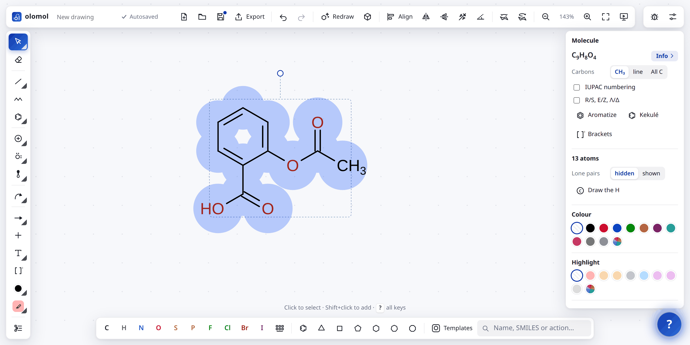
- Top bar, in groups: the drawing’s name and Autosaved, new drawing , open
 , save , Export | undo and redo
, save , Export | undo and redo  | Redraw, Turn in 3D | Align, flips
| Redraw, Turn in 3D | Align, flips 

 , Horizontal / vertical | ring flip and turning a chair | zoom, and Show
, Horizontal / vertical | ring flip and turning a chair | zoom, and Show  . In a narrow window, the groups that don’t fit go under
. In a narrow window, the groups that don’t fit go under  at the end of the bar. With two drawings or more, the tabs are under it (section 8.2).
at the end of the bar. With two drawings or more, the tabs are under it (section 8.2). - Drawing tools. A small triangle in a button’s corner means it has more variants: rest the pointer on the button, click the triangle, or click the chosen tool again. At the bottom,
 opens the Objects panel (section 2.9).
opens the Objects panel (section 2.9). - Bottom bar: elements, the periodic table , rings, Templates and the search bar (section 3.5).
- Panel with the properties of whatever is selected (section 2.15).
- Hints for the chosen tool. The ? key shows all keyboard shortcuts.
- Reporting a problem (section 10.3) and settings
 : the look of the drawing, the language, the theme and debug mode (chapter 9).
: the look of the drawing, the language, the theme and debug mode (chapter 9).
1.4 Help and examples
Rest the pointer on any button and a tooltip tells you all it does, along with its shortcut. The hint line above the bottom bar changes with the chosen tool, so it is worth a glance whenever a tool surprises you. Where the top bar has room, its buttons have words as well; in a narrower window they drop them, Turn in 3D’s first.
A right click on the canvas opens a menu of what can be done with what is under the pointer: cut, copy, paste, delete, Redraw, Turn in 3D, the flips, a bond made horizontal or vertical, Abbreviate, One compound, Group… A right click on a molecule selects it first, as a double click does. On the empty canvas the menu has paste, select all, the view and Show. Each item does what its button or key does, and the key is beside it.
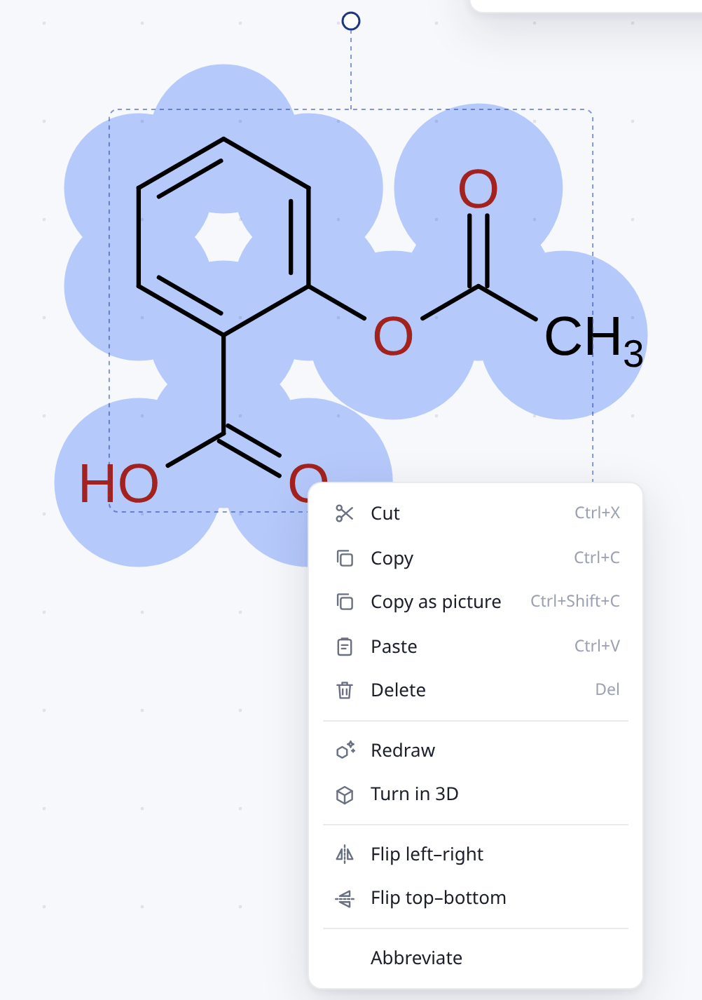
The round button at the bottom right opens Help, the quickest way to see how something is done. It holds about thirty finished drawings, shown as small pictures. Tags such as Mechanisms, Stereochemistry, Texts or Files and tabs narrow the list down.
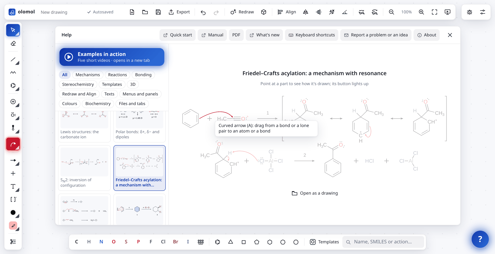
- Pick an example and point at any part of it: a tip says how that part is drawn, and the button you would use lights up in the program’s bars.
- What cannot be shown by pointing (Redraw, Templates, Align) is listed as steps under the drawing.
- Open as a drawing makes the example your own, to look at closely or to change. Ctrl+Z brings back what you had before.
Above the tags, Examples in action opens the about page in a new tab, with five short videos of olomol at work: a mechanism, a reaction scheme, a molecule built in steps and partly redrawn, a complex turned in 3D, and a Haworth projection of glucose made a chair, flipped and turned in 3D.
The header of the Help window has the Quick start (PDF), this Manual on the web and, beside it, PDF for printing (the Czech ones when the program is in Czech), What’s new with the changes in each version, Keyboard shortcuts, Report a problem or an idea (section 10.3, also the bug at the top right) and About, with the credits and licences. What’s new and About are also under the version in the bottom left corner.
1.5 The drawing saves itself
You need not worry about losing your drawing. The browser remembers it by itself, a moment after each change, so you can close the window or turn off the computer and it will be waiting when you come back. The mark beside the drawing’s name shows this: Autosaving… just after a change, then Autosaved.
Every drawing you have open is kept this way, so all of them are back the next time you open olomol, each in its tab (section 8.2). This is in this browser on this computer. To move a drawing to another computer or to send it to someone, save it as a file with Save (Ctrl+S, chapter 8). A file is also the safest home for work that matters to you, because it stays even if the browser’s data are cleared.
Earlier versions. While you draw, the browser also keeps earlier versions of the drawing, a few minutes apart. Click the mark (Autosaved), or Open  → Earlier versions of this drawing…, and a window shows them as pictures, the newest first; Bring back puts one on the canvas, and Ctrl+Z returns to the drawing you had. Closing the drawing forgets its earlier versions.
→ Earlier versions of this drawing…, and a window shows them as pictures, the newest first; Bring back puts one on the canvas, and Ctrl+Z returns to the drawing you had. Closing the drawing forgets its earlier versions.
The mark warns you in two cases. Not autosaved means this browser can’t autosave, as in a private window or when its storage is full: save your drawing to a file before you close it. Another tab means olomol is open in a second tab that has autosaved its own drawing since. Next time, the one changed last comes back, so save this one if you want to be sure of it. A drawing open in one window of olomol stays in that window: a second window doesn’t open it too, so the two never write over each other.
The button starts a new drawing in a new tab, and the drawing you had stays in its own. The empty canvas shows a faint example, a different one of four each time. Point at a part of it to learn how it is drawn, and its button lights up in red.
At the top left, next to the logo, is the drawing’s name. A new drawing has none yet (New drawing in grey); its files are offered under drawing- with the date and time, so they do not overwrite each other. Click the name to rename the drawing; saved files are named after it. With two drawings or more, the name is on the drawing’s tab, and a double click there renames it.
1.6 Moving and zooming
To zoom, use Ctrl + wheel or the magnifiers at the top. The percentage between them returns to 100 %. The button shows the whole drawing; with something selected, it centres the selection and zooms in until it fills the window. To move the canvas, use the wheel (with Shift for sideways), drag with the space bar held down, or drag with the middle mouse button.
2 Drawing structures
2.1 Bonds and atoms
Everything starts with the single bond , which is already chosen when the program opens.
- Click the empty canvas: the first bond appears.
- Click an atom: a new bond grows from it. The program picks a sensible direction, zigzag and into the largest gap; a chain runs across the page. With Shift the bond goes to the other side (the next best place), so a chain can bend the other way.
- Drag from an atom: pull a bond where you want it, in 15° steps, or at any angle with Shift. Release it on another atom to close a ring. Over the target atom the bond snaps straight to it, so you see the result at once.
- Click a bond: it changes from single to double to triple.
The other kinds of bonds are among the tool’s variants (in the picture, from the left): single, double, triple, wedge, hashed wedge, wavy, coordination, hydrogen and partial bond. Clicking a double bond with the double bond tool moves its second line to the other side or to the middle. Clicking a wedge with the wedge tool turns it round.
You can also work from the keyboard without switching tools. Point at a bond and press 1, 2 or 3. Pressing 1 again over a single bond makes it a wedge, then a hashed wedge, then both from the other end, and then a plain bond again. Shift+1 goes through them backwards. With bonds selected, 1, 2 or 3 makes all of them single, double or triple at once (with the pointer over the selection or over empty space).
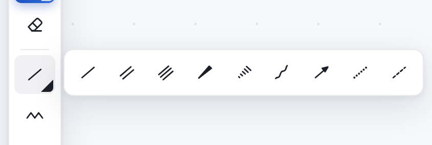
2.2 Chains and rings
The chain tool  (Z) draws a zigzag chain: drag from an atom or from the canvas. While you drag, it shows how many bonds it adds; with Shift the zigzag starts the other way.
(Z) draws a zigzag chain: drag from an atom or from the canvas. While you drag, it shows how many bonds it adds; with Shift the zigzag starts the other way.
Rings are in the bottom bar (benzene and 3- to 8-membered rings) and among the variants of the ring tool on the left. Before you click, a see-through preview shows what will happen:
- clicking the canvas draws a ring on its own,
- clicking a bond adds a fused ring (naphthalene from benzene), with Shift on the bond’s other side,
- clicking an atom attaches the ring by a new bond (phenyl); dragging from the atom aims it,
- clicking an atom with Shift puts the ring through that atom (a spiro compound).
2.3 Elements, the periodic table and group labels
The bottom bar has the most common elements, each in its own colour so you find them quickly. Pick one, and then:
- click an atom to change it to that element,
- click an atom that already is that element, or any atom with Shift, to bond a new atom of the element to it (clicking carbon on carbon extends a chain),
- click the canvas to put down a lone atom (O: water),
- drag from an atom to draw a bond to a new atom.
The element keys are quicker: C N O S P F H I, with L for Cl and B for Br. What a key does depends on where the pointer is.
- Over an atom, the atom becomes that element, once, and your tool stays as it was.
- Over empty space, you start drawing with that element. It lights up in the bottom bar and works just as described above. Clicking a bond still changes the bond, and 1 2 3 set the order of new bonds while the element stays (N, then 2: a double bond to N). C switches back to carbon.
This way you can draw with heteroatoms straight away, instead of drawing a carbon skeleton and rewriting it afterwards.
The button after the elements opens the Periodic table. Its elements are coloured by group (Alkali metals, Halogens, Noble gases…) and carry group and period numbers.
Group labels and abbreviations are in Templates → Abbreviations and attach like functional groups (section 3.2):
- Placeholders such as R, R′, X, Nu, E, LG or Ar have no hydrogens or lone pairs, which suits general mechanisms. (Ar here is aryl, not argon.)
- Abbreviations such as Me, Et, Ph, Bn, Ac, Boc, Ts, OMe or CO2Et count in the formula and mass, and files get the whole group. To the left of a bond they are written reversed (MeO–, EtO2C–).
With an atom selected, you can also type an abbreviation or a placeholder into the Element field of the panel. An isotope is written with its mass number (13C, 18O), and deuterium and tritium as D and T, or 2H and 3H. A symbol is taken as written (Cl, Na) or all in small letters (cl, na); CO or NI is refused rather than read as cobalt or nickel, since two capitals are two atoms.
Draw out in the panel draws the group an abbreviation stands for (Ph as a benzene ring), and Abbreviate does the opposite for a selected group. A selection with no abbreviation as a whole gets one for the groups in it that have one (CH2N(CH3)2 becomes CH2NMe2), and a CH3 selected on its own becomes Me. A wedge on the bond to the group stays, so the stereochemistry does not change. An abbreviation stands for a group on one bond, so it takes no second one: draw it out first to bond to its atoms. Charged groups have abbreviations too, with the charge on the label: SO3− (a sulfonate), CO2− or COO− (a carboxylate), OPO32− and OPO3H− (phosphates) and PO32− drawn out, the charge sits on an O, where it belongs.
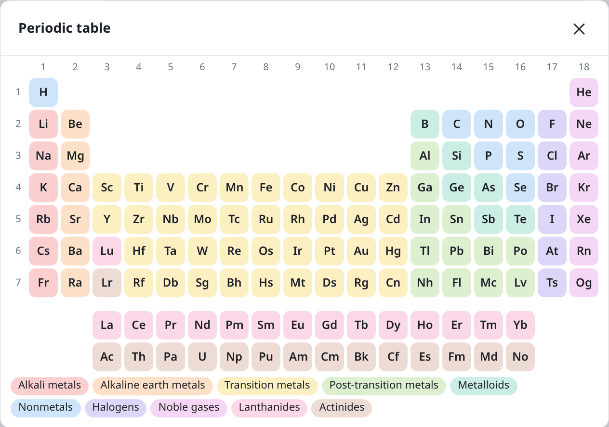
2.4 Charges, radicals and hydrogens
The charge tool on the left has four kinds: positive , negative and the partial charges δ+  and δ− . Click an atom, and click again to raise the charge (or lower it, with the negative one); a partial charge clicked again goes. + and − choose the positive and the negative one.
and δ− . Click an atom, and click again to raise the charge (or lower it, with the negative one); a partial charge clicked again goes. + and − choose the positive and the negative one.
The unpaired electron is a variant of the lone pairs tool  . Click an atom for one electron, again for two side by side (a singlet), and again for none. Two on separate sides (a triplet), three or four are in the panel’s Unpaired row; on an atom without bonds its lone pairs show with them, as a Lewis symbol (·N̈·).
. Click an atom for one electron, again for two side by side (a singlet), and again for none. Two on separate sides (a triplet), three or four are in the panel’s Unpaired row; on an atom without bonds its lone pairs show with them, as a Lewis symbol (·N̈·).
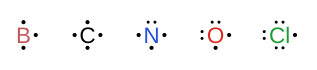
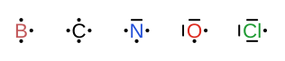
dotsbars
Over an atom you can also press + or − for a charge and . for an unpaired electron. With atoms selected, + and − change the charge of all of them.
An atom with more bonds than it can have gets a red dashed ring, which shows only on screen and never in pictures. The panel then says what is wrong, for example Si can’t have 6 bonds. Usually a charge is missing; for SiF62− see section 3.4.
Hydrogens are worked out from the bonds and the charge (CH3, NH2, OH). To set another number, use the Hydrogens row of the panel. Draw the H draws the hydrogens of the selected atoms as atoms of their own, which you need when a curved arrow goes to or from a hydrogen. Hide drawn H hides them again.
Chain ends are written as CH3 by default. The Carbons switch in the panel (CH₃, line or All C) changes this for the selected carbons: the whole molecule, or just one end. All C writes every carbon (CH3, CH2, CH), for those who do not yet read a corner as a carbon. The default for new drawings is in Settings. A charged carbon is written (C+) unless it is set to line: then only its charge is drawn, at the corner, as a carbocation or a carbanion often is in a mechanism.
2.5 Stereochemistry
The wedge  points towards you and the hashed wedge away from you. Both are among the bond tool’s variants. A wedge starts at the atom you drag from, so its narrow end is at the stereocentre. The wavy bond marks an undefined configuration.
points towards you and the hashed wedge away from you. Both are among the bond tool’s variants. A wedge starts at the atom you drag from, so its narrow end is at the stereocentre. The wavy bond marks an undefined configuration.
To show R/S and E/Z labels (Λ and Δ for complexes), tick R/S, E/Z, Λ/Δ in the panel, for the whole selected molecule or just the selected atoms and bonds. RDKit computes them, and they also go into exported pictures and olomol’s files.
When a bond joins the wide ends of two wedges it is drawn bold, as is customary (the bridge of a morphinan, the front edge of a Haworth formula). Any single bond can be drawn bold on purpose too, a bond forming in a scheme or one you want to point at: select it and choose bold bond (▬) in the panel’s Stereo row. An atom’s label can be bold as well: Label → B in the panel.
2.6 Special bonds
The bond tool’s variants also include three bonds that do not count like ordinary ones. The key D chooses the first of them, and each further press the next (over a bond, it turns that bond into them):
 a coordination (dative) bond, an arrow from the donor, which spends a lone pair on it (another click turns it round),
a coordination (dative) bond, an arrow from the donor, which spends a lone pair on it (another click turns it round),- a hydrogen bond, drawn dotted,
- a partial bond, forming or breaking, drawn dashed, for transition states.
A wedge or a hashed wedge gives a coordination bond depth, with its narrow end at the metal, and it stays a coordination bond, so the donor gets no extra bond. Redraw and Turn in 3D then keep the mirror image (Λ or Δ) you drew: Redraw does not offer drawings that would lose it, and Turn in 3D warns at a view that would. For an octahedral complex with two or three chelates (cis-[CoCl2(en)2]+, [Co(en)3]3+), R/S, E/Z, Λ/Δ writes (Λ) or (Δ) beside the metal. If you prefer, Settings can draw these arrows as plain lines.
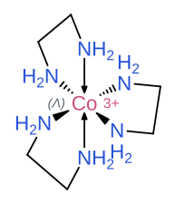
These bonds are kept in olomol’s files (.olom), KET files and pictures, but not in molfile, SMILES and similar files (section 10.2).
2.7 Selecting, moving, rotating and deleting
The Select tool (V, or Esc) does the following:
- a click selects an atom, bond, arrow or text, and Shift+click adds to the selection,
- dragging over empty space selects everything in a box, and what it will take lights up before you let go; the tool’s variants include a lasso , and Esc switches between the two when there is nothing left to cancel,
- a double click selects the whole molecule, Shift+double click adds it to the selection, a triple click selects its whole row of a reaction scheme (its molecules, + signs and arrows with what is on them), and Ctrl+A selects everything,
- Ctrl+click selects the group a thing is in (section 2.9),
- dragging moves the selection, and so do the arrow keys (with Shift, further),
- the round handle above the selection rotates it,
- an atom or bond dragged onto another atom merges with it. It snaps while you drag and shows the result; drag on and it lets go. A filled ring keeps its colour as long as it stays a ring.
To delete, use the eraser (E), which works by clicking or with a box. Delete or Delete in the panel removes the selection. With nothing selected, Delete removes whatever is under the pointer.
Every step can be undone, so feel free to try things: Ctrl+Z undoes and Ctrl+Shift+Z redoes.
2.8 One compound
A salt such as K2SiF6 is three separate particles (K+, K+ and SiF62−). Select them all and click One compound in the panel. An invisible link joins them, so they move, align and go into a grid as one molecule, and the panel shows one formula (F6K2Si).
The links show while the compound is selected, or all the time when Links in Settings is set to shown. Separate separates the particles again. Links are not written to molfile and SMILES.
2.9 Groups and the Objects panel
A group holds things together for selecting and moving, without making them one compound: a molecule with its number under it, the two halves of a scheme, an exercise’s answer you want to move aside. Select two things or more (molecules, arrows, + signs, texts) and press Ctrl+G groups can go into larger groups too. Ctrl+Shift+G takes a group apart, one level.
A plain click still selects an atom or a molecule, so a group never gets in the way of drawing. Ctrl+click selects the group, and another Ctrl+click the group round it; Ctrl+drag moves it, and Ctrl+drag of a box takes the whole groups of what it touches. Align moves groups as wholes, and SVG pictures keep them as groups, for Inkscape.
The Objects panel  , at the bottom of the tool bar, lists the drawing’s things and groups. A click on a row selects it (with Shift or Ctrl, adds it), the pointer on a row lights it up in the drawing, and the arrow before a group unfolds it. A double click on a group names it. A row dragged onto a group goes into it, and onto the strip at the bottom out of every group. The buttons at the top group and ungroup what is selected. The right-click menu has Group, Ungroup and Select its group too.
, at the bottom of the tool bar, lists the drawing’s things and groups. A click on a row selects it (with Shift or Ctrl, adds it), the pointer on a row lights it up in the drawing, and the arrow before a group unfolds it. A double click on a group names it. A row dragged onto a group goes into it, and onto the strip at the bottom out of every group. The buttons at the top group and ungroup what is selected. The right-click menu has Group, Ungroup and Select its group too.
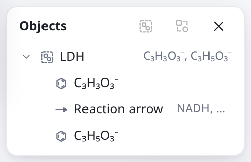
2.10 Copying and pasting
Ctrl+C, Ctrl+X and Ctrl+V work as they do elsewhere. A pasted copy follows the pointer, see-through, until a click puts it down, and Esc cancels.
You can paste from elsewhere too: a SMILES, InChI or molfile copied from a web page or another program is drawn straight away with Ctrl+V. A double bond whose E or Z the SMILES leaves open gets a wavy bond beside it.
2.11 Text
Choose the text tool  (T), click and type. What you type stays exactly as written, so the numbers in a DOI or a name are left alone. A bar over the text holds everything for formatting it:
(T), click and type. What you type stays exactly as written, so the numbers in a DOI or a name are left alone. A bar over the text holds everything for formatting it:
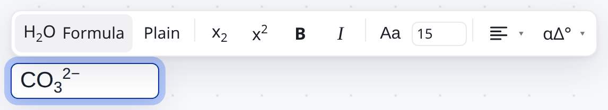
- Formula turns the selected part, or with nothing selected the whole text, into a formula. Digits after letters become subscripts and a charge at the end (Fe3+, CO32-, [SiF6]2-) a superscript. It also understands CO_3^2-, and e- or 2e- as the electron’s charge. Plain removes the formatting.
- What this rule cannot do, you set by hand: x2 (Ctrl+,), x2 (Ctrl+.), B (Ctrl+B) and I (Ctrl+I). They change the selected part or, with nothing selected, what you type next.
- The bar’s menus hold the alignment of lines (a multi-line text under a molecule or on an arrow is otherwise centred) and special characters: Greek letters, arrows, °, ±, ‡.
- Aa switches the whole text between a sans-serif (Arial) and a serif font (Times New Roman), and the field beside it sets its size in points. Without them a text has the drawing style’s font and size (chapter 9). A selected text can be made bold as a whole with Bold in the panel, a compound number, say.
Enter finishes the text and Shift+Enter starts a new line. A copied text reaches other programs as plain words, so a DOI pastes straight into the browser.
2.12 Reaction arrows
Choose the reaction arrow (X). A click puts down an arrow of standard length, and dragging draws your own (Shift: at any angle). Its variants are equilibrium  , resonance , retrosynthetic , multi-step
, resonance , retrosynthetic , multi-step  , crossed
, crossed  (a reaction that does not go), the equals sign
(a reaction that does not go), the equals sign  (the same thing drawn another way, a chair = its Haworth projection; Align reaction scheme spaces it like an arrow) and the dipole arrow
(the same thing drawn another way, a chair = its Haworth projection; Align reaction scheme spaces it like an arrow) and the dipole arrow  , which moves with its molecule. To change a selected arrow’s length, use Length in the panel (in bond lengths) or drag its end.
, which moves with its molecule. To change a selected arrow’s length, use Length in the panel (in bond lengths) or drag its end.
For an equilibrium that lies to one side, select the equilibrium arrow and click the button in the panel’s Favours row: each click moves it on, from even to the products’ side (the lower harpoon shorter) and to the reactants’ side (the upper one shorter).
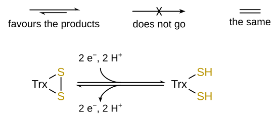
The tool puts a plus sign between reactants.
2.13 Anchors
Anchors keep a text or a reagent with whatever it belongs to, so you never have to move things one by one.
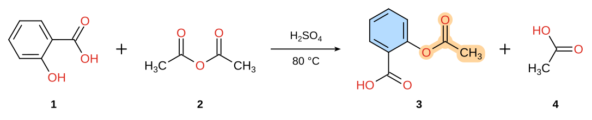
On a molecule. Every molecule has four places for text: below, above, left and right. Drag a text towards a molecule and the anchors show as boxes, with the nearest one highlighted. Release, and the text stays there: it now moves and aligns with the molecule. Several texts on one anchor stack up, and dragging one to another place changes the order. This is how you put a compound number under a molecule or a count (2 NaOH) to its left. In the panel, the arrow buttons ↓ ↑ ← → choose the anchor and free frees the text; dragging it away from the molecule frees it too. A text you type right under, over or beside a molecule goes on that anchor at once.
On a reaction arrow. An arrow has anchors above and below. Drag a text (conditions) or a whole molecule (a reagent) onto it and it moves with the arrow, as does a text typed right over or under it; drag within the row to reorder. Beside a turned or upright arrow they stand one under the other, close to it, as over and under a horizontal one. In the panel you can put + or − before a molecule on an arrow (added, leaving). A double click on an arrow selects it with everything on it.
2.14 Side arcs on reaction arrows
A side arc shows something joining or leaving a reaction on the way, as NAD+ → NADH does.
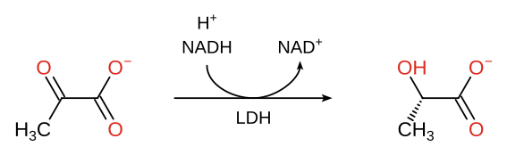
- Choose the arrow tool. A small circle appears in the middle of each reaction arrow.
- Drag out of the circle for an outgoing arc, or from the canvas to the circle for an incoming one, above or below the arrow.
- Drag a text or a molecule onto the end of the arc. The arrow lengthens itself to fit, and shortens again if you take it away.
A further arc snaps to the length of the first; drag on to make it longer. To change an arc afterwards:
- drag its end to change its length, or across the arrow to move it, with its stack, to the other side,
- click it to select just the arc, and Del deletes it; what was at its end stays where it is, free,
- in the arrow’s panel, Flip reverses the arrow and moves the arcs and stacks to the other side.
If you have set an arrow’s length by dragging its end, the arcs leave that length alone, though Align reaction scheme does change it.
On an equilibrium arrow each of its two harpoons has its own arcs: an arc above it meets the upper harpoon and goes its way, an arc below meets the lower one and goes back. So the reduction of thioredoxin takes in 2 e− and 2 H+ above and gives them off below on the way back.
2.15 The panel on the right
The panel shows the properties of whatever is selected and lets you change them.
For a whole molecule it shows the formula (with the Info button, section 6.3), Carbons, IUPAC numbering, R/S, E/Z, Λ/Δ, Aromatize and Kekulé, Brackets, lone pairs, Draw the H, Colour and Highlight. For several molecules it adds One compound.
For one atom or part of a molecule, an Atom section appears: Element, Number, Charge (− and + by one; also δ− and δ+), Unpaired electrons, Lone pairs, Label (normal or bold) and Hydrogens. Under the lone pairs it says how many the atom has.
For a bond it shows Order, Kind, Stereo (with a bold bond among them) and, for a double bond, 2nd line: Next moves the second line on, to the middle, one side or the other, and Auto gives it back to the program.
At the bottom there is always Delete and how many things are selected.
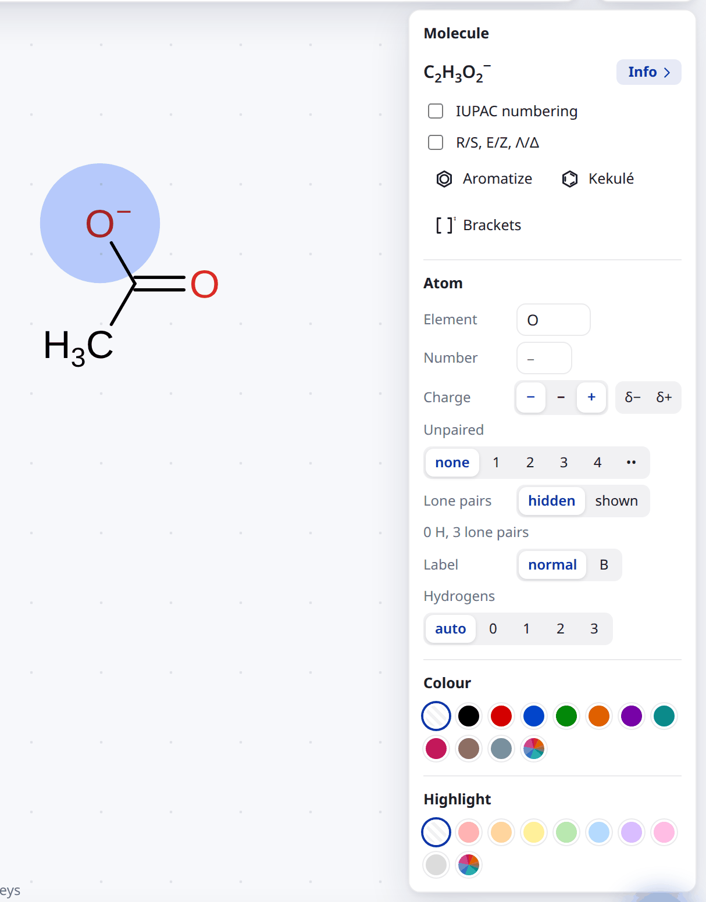
3 Templates and structures from names
Templates in the bottom bar (or Shift+T) opens a collection of ready structures. On the left, under the search, are its groups: Rings, Functional groups, Abbreviations, Compounds, Conformations and projections, Complexes, Amino acids, Sugars and nucleobases and Reagents and solvents. The large ones are split further (Rings into aromatic, heteroaromatic, alicyclic and saturated heterocycles; Conformations and projections into chairs and boats, Newman, Haworth and Fischer projections): a group shows all of it under headings, a subgroup only its own. Next time it opens where you were last.
A click picks a template. A see-through preview then follows the pointer, and another click puts it down, as often as you like. Esc stops.
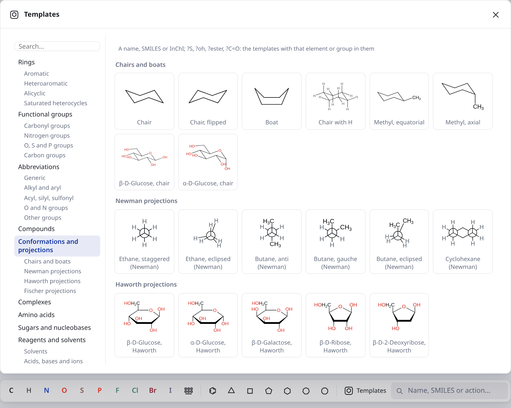
3.1 Searching
Type part of a name into Search…, in English or Czech (acid, glucose, chair). An amino acid is also found by its code, which is on its card (Phe or F). When no template matches, the field draws a SMILES or looks up a name, as the search bar does (section 3.5).
With a question mark in front, the search lists the templates that have a certain part in them, whatever they are called. Capitals do not matter.
- a group:
?oh,?Ts,?Boc,?Ph, - a kind of compound:
?ester,?amine,?ketone,?acid, - an element:
?S,?Cl, - an amino acid by its three-letter code:
?ala, - any part, written as SMILES:
?C=O,?C(=O)N.
This is handy in teaching: ?ester shows all the esters among the templates at once.
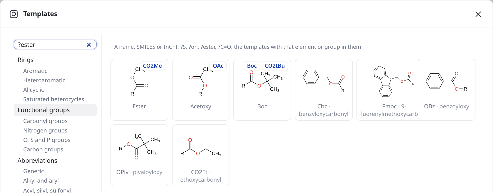
?ester3.2 Functional groups attach
The templates in Functional groups have a point of attachment. Pick a group and click an atom of your molecule: the group bonds to it, turned away from the atom’s other bonds. Dragging from the atom aims the group. With Shift the atom becomes the group’s first atom (COOH on pentane’s end carbon gives pentanoic acid). A click on the empty canvas puts the group down on its own, on R.
A group with an abbreviation (Ph, Boc, OMe…) has a small button with that label on its card. It puts the group in as one atom with that label.
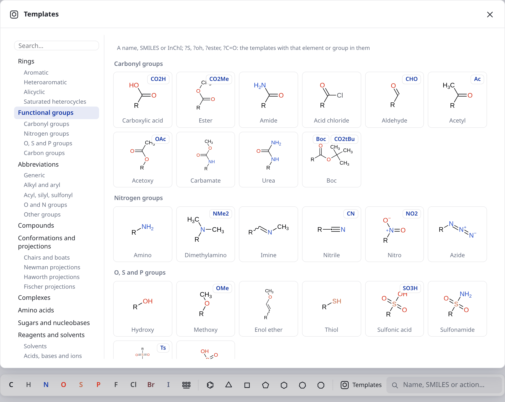
3.3 Conformations and projections
Chairs and the boat are drawn as in a textbook: parallel edges, axial bonds vertical, equatorial ones parallel to ring bonds. A chair is read as the molecule it shows, seen a little from above: its lower long edge in front, its upper one at the back, each group up or down as it points. So SMILES, InChI, Info and files get the stereoisomer in the picture (the β-D-glucose template is β-D-glucose, trans-1,2-dibromocyclohexane stays trans); other programs get it as wedges on the chair. A cyclohexene drawn in a chair’s shape (the half-chair of an E2 product) is read the same way, though it can’t be flipped or turned. Fused and bridged rings (decalins, steroids) get no stereochemistry from the picture yet.
You can also draw a chair by hand with the bond tool: it is recognised by the shape every chair has, even if it isn’t exactly the template’s. Its opposite edges are parallel and two opposite corners point inwards (a zigzag). A regular hexagon, a Haworth ring and a boat don’t have this shape. A ring with blunt tips, where you can’t tell which chair it shows, isn’t taken for a chair. When you point at a recognised chair or drag one of its atoms, the whole ring lights up in green-teal instead of the usual blue; the drawing itself doesn’t change. Stereochemistry, Turn in 3D and the ring flip work on a recognised chair. Ring flip turns a chair into the other chair (section 5.5).
- Newman projections of ethane, butane and cyclohexane are molecules seen along a bond: the front carbon is the point in the middle, the back carbon the circle, and every group round them is an ordinary atom. Curved arrows, charges, lone pairs and R/S work on them as on any molecule: an E2 on cyclohexane, seen along C1–C2 and C5–C4 with the axial bonds straight up and down, is drawn with an arrow from the axial C–H to the bond seen end on (point between the middle and the circle) and one from C–Br to Br. A click right in the middle picks the front carbon, a click on the circle the back one. With a carbon of the projection selected, the Newman projection panel rewrites the groups (Front, Back: H, CH3, OH, Cl, Ph…), sets the Dihedral (0° eclipsed (syn), 60° gauche, 120° eclipsed, 180° anti) and turns the back carbon with Turn the back 60° in cyclohexane the ring groups stay and the back can’t turn on its own. Files and SMILES get the stereoisomer the projection shows; molfile, CDXML and the other formats for other programs get it drawn plainly with wedges. Redraw makes an ordinary drawing of it, and drawings from older versions open as molecules.
- Haworth and Fischer projections (glucose, galactose, ribose, glyceraldehyde, alanine, serine…) carry stereochemistry, which is written to files as wedges.
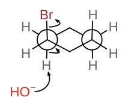
3.4 Complexes
The Complexes group has the general shapes of coordination compounds: Linear, Trigonal planar, Tetrahedral, Square planar, Trigonal bipyramidal, Square pyramidal and Octahedral. A general atom M sits in the middle with ligands L round it, and wedges give depth. Replace M and L like any atom: click with an element from the bottom bar, press a key over the atom, or use the panel’s Element field, where you can also type NH3, PPh3 or Cl.
A complex ion’s charge belongs to an atom. The program counts bonds and lone pairs from the atoms’ charges, and a charge written on brackets is just text. Take hexafluorosilicate, [SiF6]2−, as an example:
- Put down an Octahedral complex, then change M to Si and all L to F (select them and type F into Element).
- Select Si and set Charge in the panel to 2−, or press − twice over the atom. Si with six bonds is now fine and the red ring goes.
- For the bracket notation, click the ion with the Brackets tool. Si already carries the charge, so do not write it on the brackets, or the picture shows it twice.
- Add the K+ ions and join the whole salt with One compound (section 2.8).
There is another way, closer to the bonding picture: four plain Si–F bonds, and two fluorides F− attached by coordination bonds  from F to Si. A dative bond does not count among Si’s bonds, so Si stays neutral and the two F− carry the charges.
from F to Si. A dative bond does not count among Si’s bonds, so Si stays neutral and the two F− carry the charges.
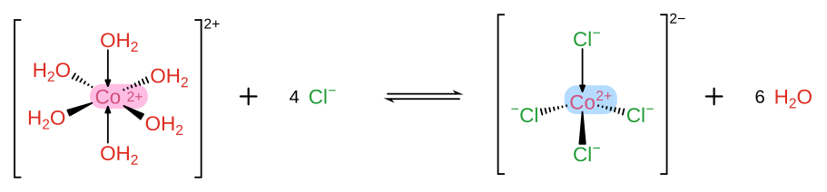
To see any complex in space, use Turn in 3D (section 5.2), also a square planar one such as cisplatin drawn as a cross.
3.5 The search bar: structures, templates and actions
The field at the right end of the bottom bar (/ puts the cursor in it) understands what you type in several ways, and a list above it shows what it found, the best next to the field. ↑ and ↓ choose, Enter does it, Esc leaves.
- A SMILES (
CC(=O)Oc1ccccc1C(=O)O) or an InChI is drawn as you type, on your own computer, even offline; Enter and a click put it where it should go. - A name (
aspirin,caffeine) or a PubChem number (CID 2244) is looked up in PubChem, which needs the internet and knows English names only. PubChem gets only what you typed, never your drawing. - Elements by symbol or name (
Fe,iron) give the atom tool; templates come by name, as in Templates and with a question mark in front, the templates with a part in them (?ester,?C=O, section 3.1). - olomol’s own tools and actions by name or by what they do (
ring flip,export SVG,newman,show), with their keys beside them, so you can find what you don’t know the button of. - Drawings: the open ones by name, and your recent files.
- A link to olomol, or just its end (
#smiles=CCO), opens what it holds (section 8.6), handy in the installed app, which has no address bar.
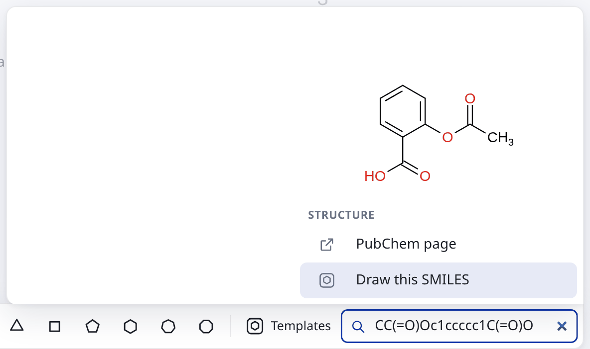
A SMILES, InChI or CID comes first in the list; words find what olomol has first and PubChem last, so Enter never sends a word to PubChem that a template or an action matches.
When a SMILES has a mistake, the program says what and where, for example Atom 2 (N) has 4 bonds, more than a neutral N can have; with a charge it can have one more: [N+]. When the mistake is a charge outside its brackets (N+ for [N+]), it offers the corrected SMILES: Draw … instead.
A SMILES or InChI copied from elsewhere can simply be pasted onto the canvas with Ctrl+V you do not need the search bar for that.
A halogen with more bonds is drawn as written: Cl(=O)(=O)(=O)[O-] as perchlorate with Cl=O double bonds (not Cl3+ with four O−) and Cl=O as H–Cl=O. RDKit itself rejects such notation, so it gives no InChI or R/S for them.
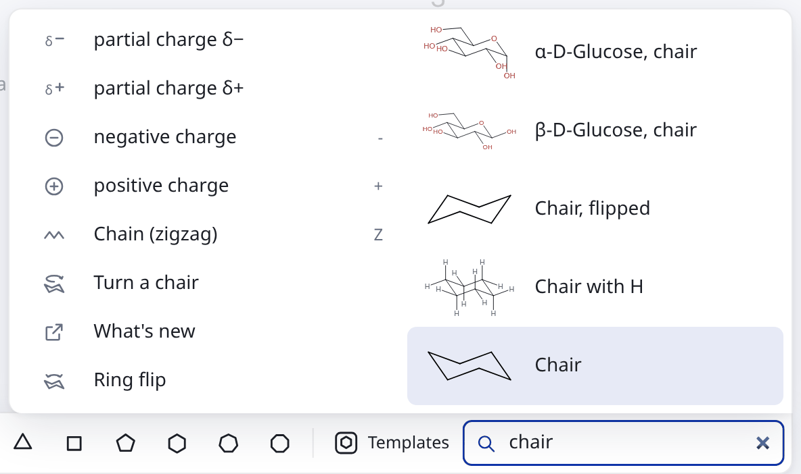
chair: templates and actions4 Mechanisms
In olomol, lone pairs and curved arrows are part of the drawing, not pictures laid on top. They belong to their atoms and bonds, so when you move, rotate or change a molecule they redraw themselves, even while you drag.

4.1 Lone pairs and unpaired electrons
Choose lone pairs  (:) and click an atom, or drag a box over several atoms. If atoms are already selected, pressing the tool’s button or : shows the pairs on all of them (again: hides them). In the panel the same thing is the Lone pairs switch: hidden / shown.
(:) and click an atom, or drag a box over several atoms. If atoms are already selected, pressing the tool’s button or : shows the pairs on all of them (again: hides them). In the panel the same thing is the Lone pairs switch: hidden / shown.
How many pairs an atom has follows from the chemistry: valence electrons minus charge, bonds, hydrogens and unpaired electrons. That is why the nitrogen of pyrrole has none and that of pyridine one. Add a charge or a bond and the count updates itself. Pairs are drawn as dots; Settings can switch them to bars (Bars (Lewis)).
4.2 Curved arrows and fishhooks
Choose the curved arrow  (A) for an electron pair, or the fishhook among its variants (Shift+A) for one electron. Then:
(A) for an electron pair, or the fishhook among its variants (Shift+A) for one electron. Then:
- Start where the electrons come from: a bond, an atom with a lone pair, or for a fishhook an atom with an unpaired electron (the fishhook starts at that electron).
- Drag to where they go: an atom, a bond, or the dot of a new bond (see below), and release.
Instead of dragging, you can click the start and then the end. The tool stays on, so you can draw arrow after arrow. The program works out the path itself: it avoids labels, bonds, lone pairs and other arrows, and starts on the right side.
Arrows to a new bond. When the electrons make a new bond, the arrow can end between the two atoms, where the bond forms. While you drag a fishhook, or a curved arrow with Shift held (it can also be pressed in the middle of the drag), faint dashed lines lead from the electrons to every atom within five bond lengths that a new bond could go to, each with a dot in its middle. The lines in the pointer’s direction are stronger. Drop the arrow on a dot and it ends at the new bond; drop it on an atom and it ends on the atom. This is how you draw hydrogen abstraction by a chlorine radical: a fishhook from Cl• and one from the H–C bond meet at the new Cl–H bond, and the other fishhook from the H–C bond goes to the carbon. Two radicals combining, or a nucleophile making a new bond, are drawn the same way.

It also checks the chemistry. It refuses an arrow from an atom that has no electrons to give and tells you why, for example This C has no lone pair or unpaired electron, so the electrons can’t come from it. Start on a bond or another atom.
The colour of new arrows (red, say) is set in Settings → New arrows.
4.3 When an arrow does not look right
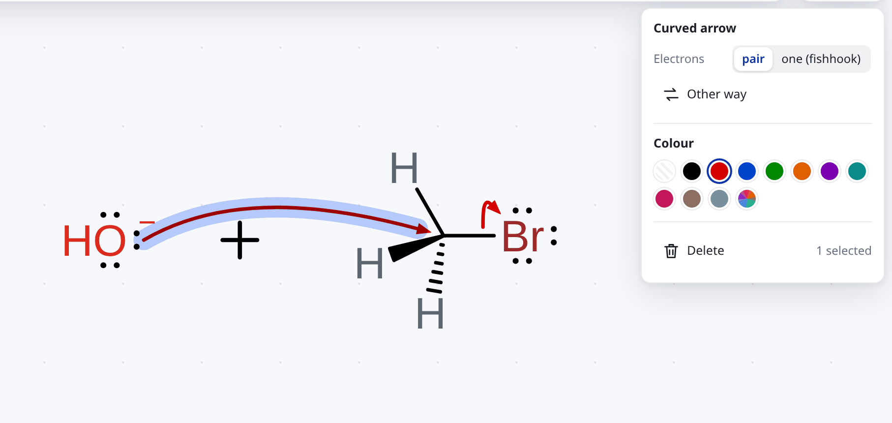
- Drag the arrow with the select tool to where it should run. The program picks the nearest good shape.
- Click Other way in the panel to draw the arrow the second best way, from the other side or from another lone pair. Click again for more; Best way returns the original shape.
- The Electrons switch turns the arrow into a fishhook and back (pair / one (fishhook)).
4.4 Orbitals
Orbitals are among the variants of the tool  below the lone pairs: a p orbital
below the lone pairs: a p orbital  , a hybrid orbital (a lone pair, σ*) and an s orbital
, a hybrid orbital (a lone pair, σ*) and an s orbital  the fourth variant, the overlap line , only draws dashed lines, dragged from one orbital to an orbital of another molecule. Click an atom to put one on it. A p orbital stands upright, a hybrid points away from the bonds, and dragging from the atom points it that way at once. Orbitals lie behind the bonds and labels, so the drawing stays readable.
the fourth variant, the overlap line , only draws dashed lines, dragged from one orbital to an orbital of another molecule. Click an atom to put one on it. A p orbital stands upright, a hybrid points away from the bonds, and dragging from the atom points it that way at once. Orbitals lie behind the bonds and labels, so the drawing stays readable.
- Turning: drag a lobe, with the orbital tool or the select tool. It turns in 15° steps and snaps to the bonds’ directions, the perpendiculars to them and the lines between them; with Shift it turns freely. It turns, flips and is redrawn with its molecule.
- Phase: a click on a lobe with the orbital tool swaps the shaded and the white lobe; in the panel it is Other phase. The shaded lobe is grey and the other white. The paint tool colours the lobe you click; in the panel, the toggle above the colours, shaded or other phase, chooses which lobe they paint.
- Size: the lobes’ size, for instance by the HOMO’s and LUMO’s coefficients, is set with − and + in the panel.
- Overlap: a lobe dragged onto an orbital of another molecule draws a dashed line between them. The two stay two molecules but are aligned together, like a diene and its dienophile. The line runs between the lobe you dragged and the lobe you dropped it on (a C–H bond’s lobe and the lower lobe of a p orbital, say); dropped on the atom, it joins the lobes facing each other.
- Arrows: a curved arrow can start at a lobe or end on one, from a nucleophile’s lone pair into the σ* of a C–Br bond, say.
On an atom with a label (O, N, Br) the lobes start outside the letters, and written hydrogens and the charge keep out of their way (NH beside the orbital, HO− with its minus over the O). In Turn in 3D (section 5.2) the p orbitals stand upright to the molecule’s plane as you see it, on the side you drew them on. After Use this view they stay so, and a new p orbital on such an atom gets the same direction.
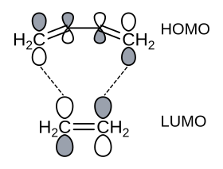
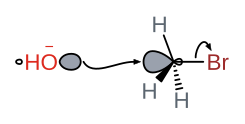
4.5 Resonance structures, transition states and brackets
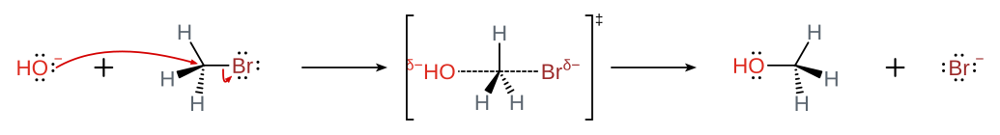
Resonance structures are separated by the resonance arrow , a variant of the reaction arrow.
Brackets (K): drag a box, or click a molecule. The Brackets button in the panel puts them round the selected atoms. Brackets round a whole molecule suit a transition state or a complex ion, and the panel adds ‡, a charge or anything you type at the top right. Brackets round part of a chain mark a polymer’s repeating unit: they cross the bonds leaving it and get n. Shape switches between square and round.
Transition states use the partial bonds and δ charges among the variants of the bond and charge tools. A δ+ or δ− that a curved arrow would cross moves to another side of its atom by itself. Redraw turns an SN2 transition state sketched by hand into the textbook picture: both partial bonds in a line, and the other three bonds with wedges as you sketched them.
4.6 Aromatic rings
Aromatize in the panel draws a circle in aromatic rings, solid, or dashed if you choose that in Settings → Aromatic. Charged groups that look the same in all resonance structures (COO−, NO2, SO3−, guanidinium) are drawn delocalised with δ charges. With nothing selected, this applies to all molecules. Kekulé brings back single and double bonds.
Under the circle the single and double bonds remain, so the formula, lone pairs and files do not change, and other programs get an ordinary Kekulé structure. That is also why Kekulé brings back exactly the bonds that were there.
When you change a structure so that an aromatic ring or a delocalised group no longer makes sense (you delete a ring atom, or drag an acetate oxygen onto another atom), the program returns it to a Kekulé structure by itself.
5 Editing and arranging
5.1 Redraw
When a molecule looks muddled, perhaps after pasting a SMILES, select it and click Redraw . The program offers several drawings made by different methods, next to your Current drawing, and you click the one you like. Ctrl+Z undoes the choice.
The drawings are ranked. Those without crossing bonds or overlapping atoms, and with even bonds and angles, come first, and only the best few are shown. They are ranked once, when the quick methods are done; drawings from the slower ones (Indigo’s clean-up, the 3D views) come a few seconds later and are added after them, so no drawing moves while you look. Show all drawings brings in the rest and Show only the best hides them again. A note under a drawing warns when bonds cross or atoms overlap in it.
Every drawing is checked: one that would change the molecule, its stereochemistry for example, is never offered. Redraw changes how a molecule looks, never what it is. Each drawing of a whole molecule is lined up with the page, turned by up to 15° so that most of its bonds lie at multiples of 30°, as a molecule pasted as SMILES is (a view of a 3D model keeps the view chosen for it).
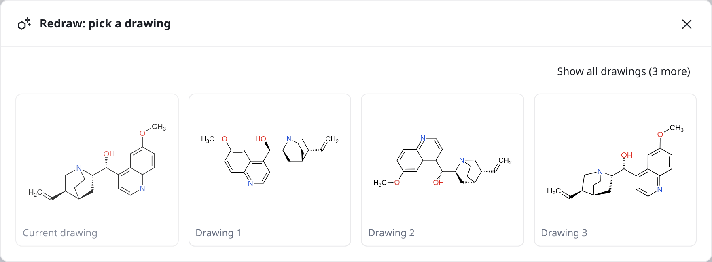
Drawings from a 3D model. Some drawings come from a 3D model of the molecule, turned and projected onto the page with wedges for depth. They are offered where they are the right picture: for cages and bridged rings (adamantane, norbornane, tropane), metal complexes, molecules with an expanded octet and SN2 transition states. Any other molecule Turn in 3D shows in 3D. A large molecule such as taxol can take ten seconds or so, but the page does not freeze while you wait.
Molecules with one central atom with an expanded octet, or with five or more electron pairs round it (PCl5, SF6, SF4, ClF3, XeF4, ClO4−, SO42−), get their VSEPR shape, with room for the lone pairs. Sulfate is drawn as in a textbook, with the S=O double bonds in the plane of the page and O− as a wedge and a hashed wedge. This part is still experimental (section 10.2).
5.2 Turn in 3D
Sometimes a molecule reads best from one particular side. Select one molecule and click the cube next to Redraw. The program builds a 3D model, which takes a moment for a large molecule, and shows it just as it will be drawn, with the back paler so that you can see the depth.
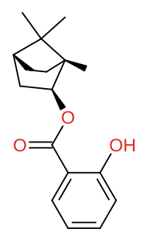
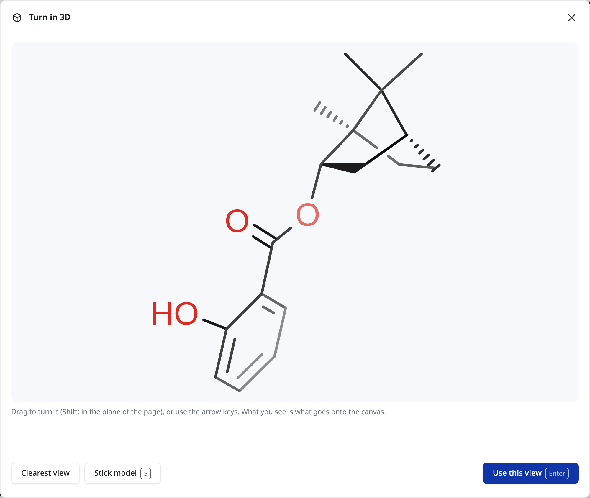
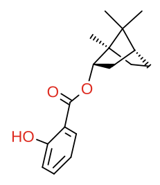
as pastedin the window, turned by handafter Use this view
- Drag to turn it, or with Shift to turn it in the plane of the page.
- The arrow keys turn it in small steps, with Shift in the plane of the page.
- Clearest view goes back to the view the program found best, which is also where it starts.
- Stick model (S) shows the model itself instead of the drawing, turned the same way: its true bond lengths and angles, with every hydrogen. Groups written as shorthands are drawn out (see below). It has the drawing’s colours and highlights of atoms and bonds too. Small hydrogens (H) draws the hydrogens the model adds small and close to their atoms, so that the skeleton stands out; those you drew as atoms stay as they are. It doesn’t go onto the canvas: instead of Use this view there is Save picture (PNG, with SVG beside it), for notes next to the drawing, say, and Esc closes the window with your drawing as it was.
- Use this view puts the drawing on the canvas. Ctrl+Z undoes it. The paler back is only a help in this window; on the canvas you get an ordinary drawing.

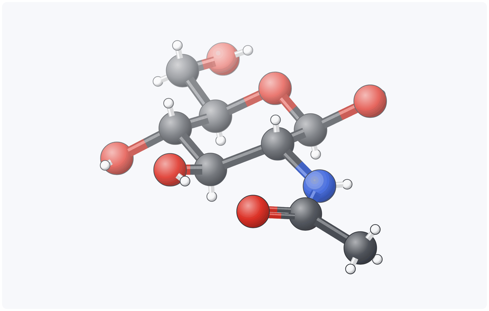
every hydrogenH: small hydrogensGroups written as shorthands (Ph, OMe, NHAc, OBz, also PPh3 on a metal) are drawn out atom by atom in the stick model, so that the molecule’s real shape shows. A group’s carbons, hydrogens and bonds have a colour of their own, explained under the model. Oxygen, nitrogen and the other elements keep their usual colours, so you see at once what the group contains: the nitrogen and the carbonyl oxygen of NHAc, both oxygens of a benzoate (OBz). Draw out groups (G) is on to start with; switched off, it shows each group as one ball with its shorthand, for when the model with every atom is crowded. The window remembers both, G and H, until the tab is closed.
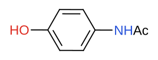

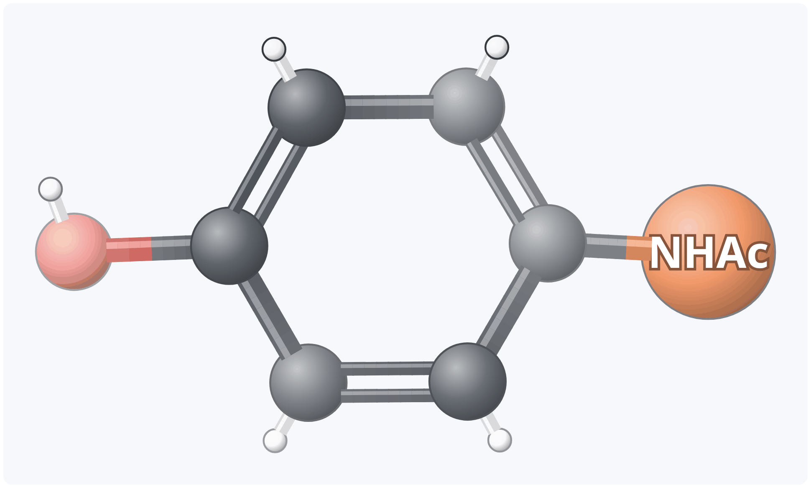
drawn with a shorthandthe group drawn outG: the group as its shorthandThe wedges are chosen so that R/S and E/Z stay as you drew them, and the 3D model itself is checked against your drawing. The model also has the drawing’s conformation: a chair (from the templates, or drawn by hand and recognised) gives that chair (an axial OH stays axial, even where the other chair is more stable), cyclohexane in a Newman projection that chair, and a Newman projection of a chain the dihedral drawn, an eclipsed one too. A diene or an enone drawn s-cis (for a Diels–Alder) stays s-cis, though s-trans is more stable. If no such conformation can be found, the window says so and shows another. Sometimes a view cannot be drawn clearly: its wedges would not say the right R/S, or a bond points almost straight at you. The window then says so, and the button becomes Use it anyway: turn the molecule a little further, or use the view as it is.
Complexes work too. The whole complex is optimised by a force field (UFF), so each ligand keeps its proper shape, chelating ligands such as EDTA wrap round the metal and porphyrins stay flat, and where two bonds cross, the one behind is broken. If the program has no 3D model for a molecule, it tells you why.
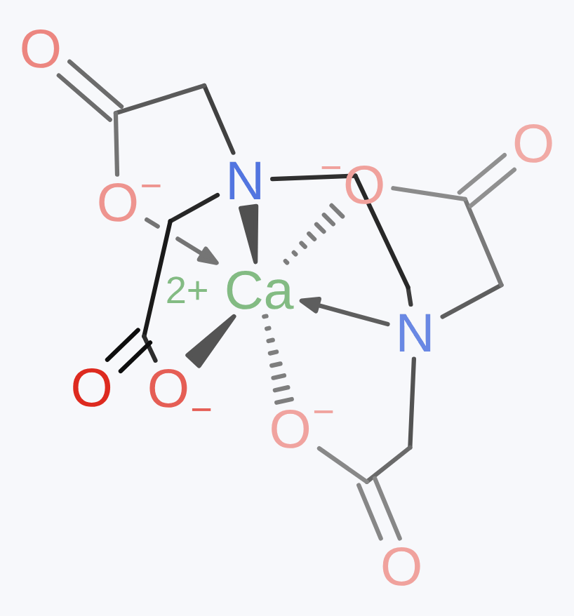
5.3 Redrawing only a part
Often most of a molecule is just as you want it and only one part is a mess: a side chain, or a ring squeezed in. Select only that part, with a box, the lasso or Shift+click, and click Redraw.
The window then opens with a section of its own, Only the selected part, the rest where it is. In these drawings nothing outside your selection moves. Depending on the molecule you may see:
- Selected part redrawn 1 (2, 3…) draws the part anew,
- Selected part tidied keeps its shape and cleans it up,
- Selected part unchanged, reattached keeps it exactly as drawn and sets it back in place, which helps after you have dragged a part away.
This is also how you get just one part of a molecule in 3D: turn the whole molecule (section 5.2), then clean up the part you want flat. Bornyl salicylate below was made that way. The bornane stays as it was turned, while the salicylate, its ring seen at a slant after the turn, is flat again.
Below, Whole molecules offers the usual drawings of the whole thing, should you prefer them. The example Redrawing a part: the rest stays as drawn in Help shows the difference on one molecule.
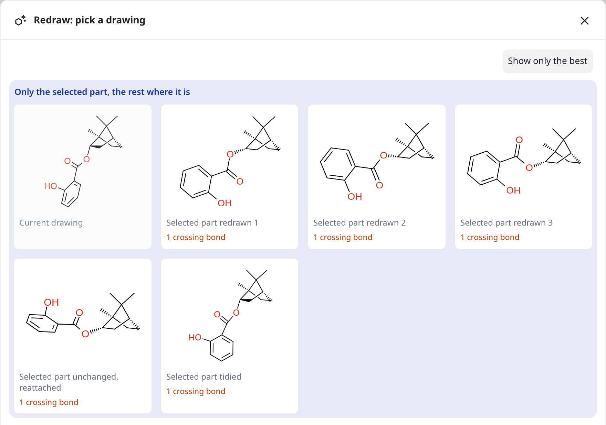
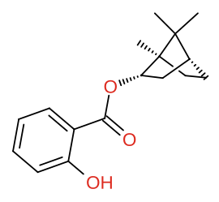
5.4 Align and grid
Select several molecules, and arrows and texts too if you like, and open Align:
- Align reaction scheme makes one row of the selected reaction: equal gaps, horizontal arrows, reagents going with their arrow, and texts under molecules on one line.
- Align lines up the left, right, top or bottom edges, or the middles.
- Space evenly works horizontally or vertically, with equal distances between middles or equal gaps.
- Grid arranges molecules in rows. Enter the number of Columns (or leave auto) and, if you wish, the Gap between cells in bond lengths (1.25 by default), and click Arrange in a grid. The grid stays where the selection was.
Molecules joined by a curved arrow move together. A text on an anchor always goes with its molecule, and free texts align on their own.
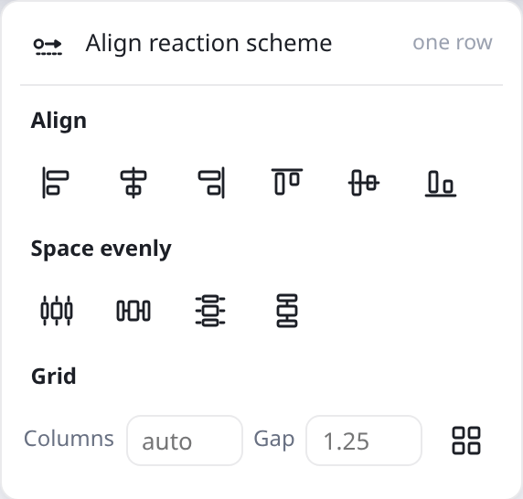
5.5 Flipping and straightening
- and in the top bar flip the selection, or with nothing selected the whole drawing. Wedges are swapped, so the molecule stays the same (R stays R).
- Flip over a bond : select part of a molecule, click the button, then click a bond. The selected part turns about the bond as an axis; with nothing selected, the smaller side does. The preview washes out what turns and shows in blue where it goes; Esc cancels. R/S is kept.
Ring flip turns a chair into the other chair, axial ⇄ equatorial: click the button, then the chair (inside its ring or on one of its bonds). Each group stays on its face of the ring (up or down), so an axial group pointing up becomes an equatorial one pointing up, and cis and trans, R/S and D or L are kept: β-D-glucose, all equatorial, becomes the all-axial chair and is still β-D-glucose. Every ring atom stays where it was (left, right, back or front), so the class sees the same carbon go from axial to equatorial; a group such as CH2OH or phenyl turns as a whole. The preview shows the other chair in blue. The flip is animated through a boat (one tip drops, then the other rises); Settings → Animations turns that off. Shift+click puts the other chair beside the first, with an equilibrium arrow between them: the picture for a handout. Another click flips the chair back; Esc ends.
A chair from the templates (Templates → Conformations and projections, turned, enlarged, mirrored or with groups added) flips, and so does one drawn by hand if it is recognised (it turns green-teal under the pointer). The flipped chair is drawn in the template’s shape. A flat six-membered ring, a hexagon or a Haworth projection, becomes a chair: pointed at, it turns green-teal with the chair see-through over it, and a click draws it. Each group goes axial or equatorial by its face, from its wedge or hashed wedge (a Haworth’s group up or down), so the molecule stays the same. It is always the templates’ chair, its left tip raised (a sugar ⁴C1, β-D-glucose all equatorial); the ring flip gives the other one. A group whose side the drawing doesn’t say goes equatorial, with a wavy bond where it sits on a stereocentre. A ring with a double bond (a cyclohexene) and fused or bridged rings (decalins, steroids) are refused with a message.
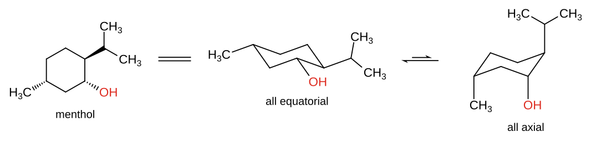
Fig. 33: Menthol drawn as a flat ring with wedges = its chair, every group equatorial; the ring flip gives the other chair, every group axial, and the equilibrium favours the first Cyclohexane in the template’s Newman projection (seen along C1–C2 and C5–C4) flips too: both projections stay where they are, C3 and C6 change sides, and each group on the four carbons seen end on goes into the other slot on its face of the ring, axial ⇄ equatorial. Trans-diaxial Br and Cl become diequatorial, and in 3D go from anti to gauche. Groups on C3 or C6 stop the flip.
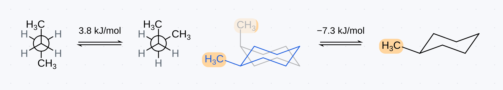
Fig. 34: Ring flip: the other chair under the pointer, see-through in blue; a click draws it 
Fig. 35: Cyclohexane in a Newman projection flipped, with Shift+click beside the first: the trans-diaxial Br and Cl are now diequatorial - Turn a chair turns a chair a third of the way round its axis, anticlockwise (with Shift clockwise): each ring atom moves two corners on with its groups, which stay axial or equatorial, up or down. It is the same molecule in the same conformation, only seen turned; three turns bring it back. When a flat ring becomes a chair with its atoms on other corners than you wanted, turn it until they are where you want them; the ring flip gives the other conformation.
- Horizontal / vertical makes a bond straight. Click the button, then the bond: the selection turns if the bond is in it, otherwise the whole molecule. Another click on the bond turns it a quarter further. With one bond selected, its molecule turns as soon as you press the button.
6 Atom numbering and the Info card
6.1 IUPAC numbering
Select a molecule and tick IUPAC numbering in the panel. The parent chain or ring is numbered by the IUPAC rules (2013 recommendations), and the numbers are worked out again after every change: add Cl to the other end of hexane and C1 moves there. The panel says which rule decided, for example Numbered so that the alcohol (OH) group gets the lowest number: 2, not 4.
The program knows how to choose the parent chain or ring: by the senior principal group (acid > ester > acyl halide > amide > nitrile > aldehyde > ketone > alcohol > thiol > amine), a ring before a chain, then the longest chain with the most multiple bonds and substituents.
It gives the lowest locants to ring heteroatoms, the principal group, multiple bonds (double before triple) and substituents, and finally goes by alphabetical order. Only the parent is numbered, as in a name.
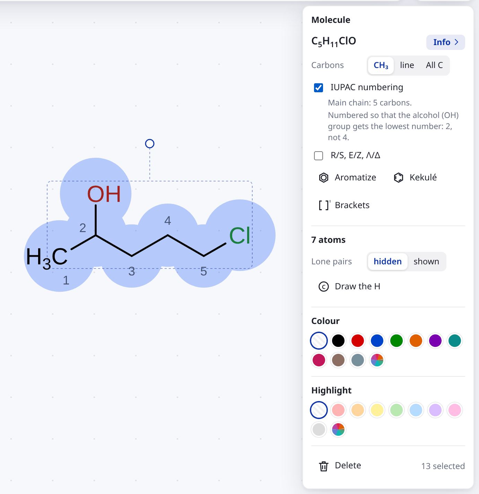
6.2 Your own numbers
Fused, bridged and spiro rings (naphthalene, steroids) have numberings of their own that the program does not work out. For them, and for assigning NMR signals, use the atom number tool , a variant of the text tool. Click atoms in the order you want them numbered; clicking again removes a number.
To change one atom’s number, use the panel’s Number field. Remove own numbers deletes them all. Numbers are kept in olomol’s files, links and pictures.
6.3 The Info card
Select a molecule and click Info next to the formula in the panel. A card opens beside the panel with the numbers a lab report or experimental section needs:
- Molar mass and Exact mass,
- ions for HRMS: [M+H]+, [M+Na]+ and [M−H]− (for an ion, [M]+),
- Anal. calcd for C, H, N and S,
- SMILES, InChI and InChIKey.
Click a row to copy it. You get only the formula, ion and number, with no words, so it fits a report in any language: for example C9H8O4 [M+H]+ 181.0495 or C9H8O4: C 60.00, H 4.48. Then paste it into your text.
Everything on the card is computed on your computer. The card closes when you select another molecule or click the empty canvas.
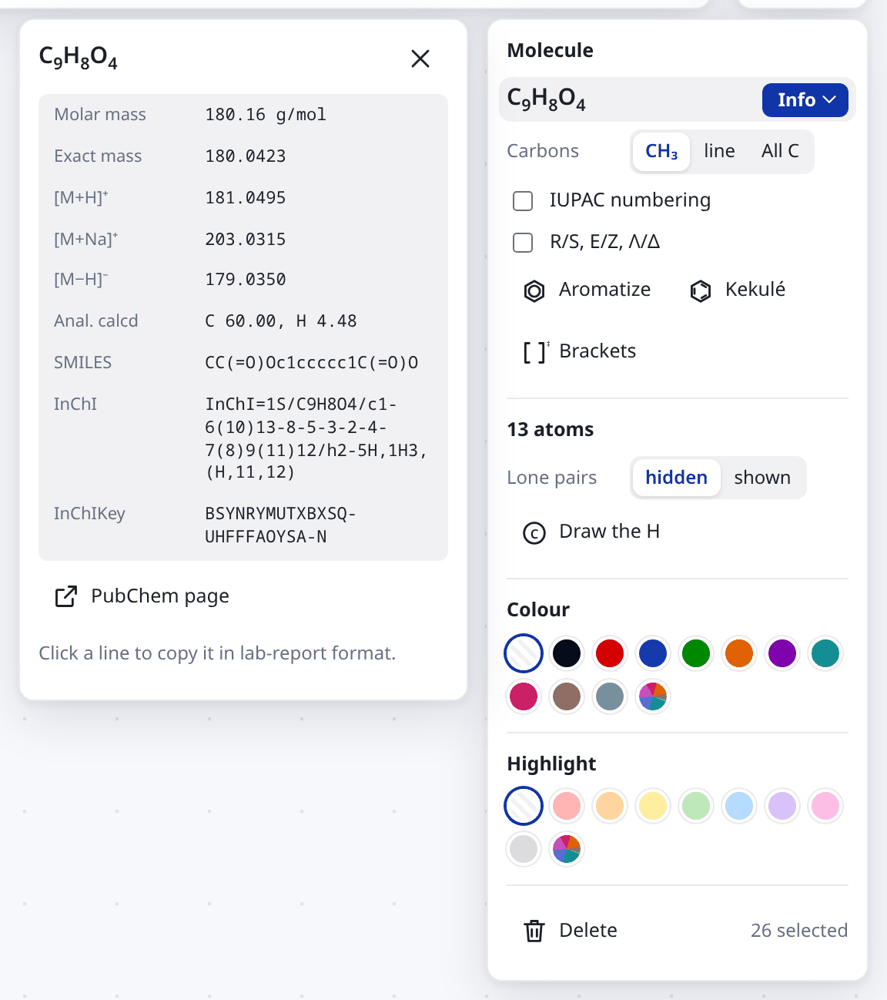
6.4 Finding a compound on PubChem
PubChem page on the Info card opens the compound’s page on PubChem. It is the only thing on the card that sends anything out: the molecule’s InChIKey, by which PubChem finds the compound, and its SMILES too if PubChem has no exact match.
What you draw is not always exactly what PubChem has. You may have left a stereocentre undefined, or drawn an isotope. Then, instead of guessing, olomol shows a page of cards with PubChem’s picture, name and number for each candidate. Click a card to go to that compound. The heading says how they differ:
- Your drawing leaves stereochemistry open: PubChem has it just as you drew it (the first card, marked as drawn), and the others define more of it, in agreement with what you drew. One of those is often what you meant.
- Not with exactly this stereochemistry: nothing matches exactly, but these agree with the stereocentres you did draw.
- This stereoisomer isn’t on PubChem: these have the same atoms and bonds, with other stereochemistry.
- Not with exactly these isotopes: these have the same atoms and bonds, with other isotopes or none.
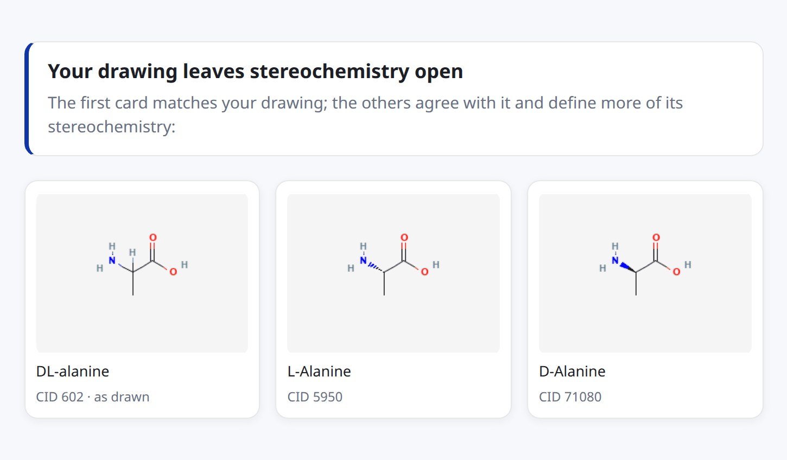
If PubChem has nothing at all, the page says so and offers Search PubChem.
7 Colours and highlighting
7.1 Colour
Colour changes lines and letters. Select atoms, bonds, arrows or text and click a colour under Colour in the panel; the crossed-out circle is Default colour. Or use the tool at the bottom left, with ten colours among its variants, and click or box what you want to colour.
The rainbow circle after the colours (More colours, or a colour code) opens a larger choice: a row Used last, a grid Colours and a field for a colour code (#cc0055, #c05, rgb(204, 0, 85) or a name like teal; Enter uses it). The circle next to the field opens the system’s colour picker. The program remembers the colours you use and offers them among the tool’s and panel’s colours too.
When Atom colours in Settings is set to Black, the elements are drawn in black but your own colours stay, so red arrows on black structures stay red.
7.2 Highlighting and filled rings
Highlighting is a soft coloured background behind atoms and bonds, as RDKit draws it. It marks a group, a reaction centre or the common part of several molecules.
Use the highlighter  at the very bottom left, with eight colours. Click atoms and bonds or box them; a second click takes the highlight off. The panel does the same under Highlight, and here too the rainbow circle offers more light colours.
at the very bottom left, with eight colours. Click atoms and bonds or box them; a second click takes the highlight off. The panel does the same under Highlight, and here too the rainbow circle offers more light colours.
A click inside a ring fills it with colour. Round written atoms (O, N, CH2) a round cut-out remains, so the colour does not cover the letters.
With the select tool , a click into a filled ring selects the ring, a double click the whole molecule, and dragging moves it. A smaller highlight always lies over a larger one (the orange difference over the blue common part).

A fill goes when you break the ring by deleting a ring atom or bond. Otherwise you can remove it with the highlighter’s No highlight variant (click inside the ring), with the eraser (click inside the ring), or with No highlight in the panel when all the ring’s atoms are selected.
7.3 Example: what molecules have in common
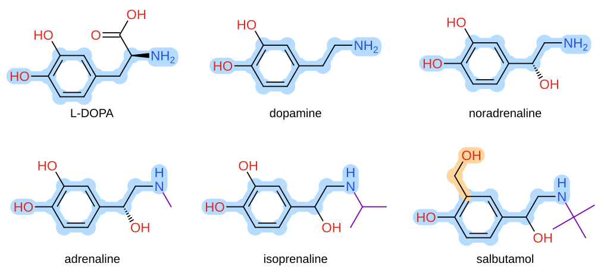
L-DOPA, dopamine, noradrenaline and adrenaline are made in the body one from another; isoprenaline and salbutamol are drugs. The common part, a phenol with a C–C–N chain, is highlighted in blue and turned the same way in every molecule. Salbutamol, an asthma drug, has its main difference highlighted in orange: CH2OH in place of one OH, so the enzyme COMT does not break it down and it acts for hours, not minutes. The groups on nitrogen are painted purple with the paint tool: the bigger the group, the more the compound acts on β-receptors.
To make a picture like this:
- Draw the first molecule, copy it (Ctrl+C, Ctrl+V) and edit the copy. The common part stays turned the same way everywhere, which molecules pasted from SMILES would not do.
- Select everything, enter 3 Columns in Align and click Arrange in a grid.
- Select the common part (drag a box, Shift+click) and click the blue Highlight in the panel. Do the same with orange for the difference.
- Colour the groups on nitrogen with the tool or with Colour in the panel.
8 Files, tabs, export and links
The way out of olomol depends on what you want to do next:
| You want to… | Use |
|---|---|
| keep working on a drawing later | Save (Ctrl+S): an olomol drawing (.olom), with everything in it |
| put it into Word, PowerPoint or Google Docs | Copy as picture (Ctrl+Shift+C), then Ctrl+V there |
| print it, or make a PDF of it | Export → PDF / Print… |
| go on editing it in Inkscape | SVG |
| send it to a colleague or students | Copy link, or the .olom file |
| show it in a lecture | Show |
| open it in Ketcher | Structure file: KET |
| open it in ChemDraw or another chemistry program | Structure file: Molfile, SDF, SMILES or InChI |
| start a calculation from it | Structure file: XYZ |
8.1 Save and open
Save (Ctrl+S) stores the drawing as an olomol drawing, a .olom file. It opens here again with everything in it: lone pairs, curved arrows, colours, highlights, numbers, groups and the drawing’s style. For your own work it is the best choice. (Its name stands for Olomol Layout Object Model; section A.4 says more.)
As in a word processor, a drawing knows its file. In Chrome and Edge, Ctrl+S writes it back into that file without asking (the browser asks once per visit whether olomol may), and Ctrl+Shift+S (Save as) asks for a new name and folder. A dot on the save button, and on the drawing’s tab, means changes that are not in the file yet. A file another program wrote (KET, CDXML, a molfile) is never written over: Ctrl+S then asks where to save the drawing as .olom. If the file has changed since olomol read it (in another program or another tab), olomol asks before writing over it. Firefox and Safari can’t write into files, so they download them: the first time under a name you give, then again under that name, into the downloads folder.
Open  (Ctrl+O) reads olomol drawings (.olom), KET, molfile, SDF, SMILES, RXN, CDXML and CDX (ChemDraw), CML and XYZ. A picture exported from olomol (SVG or PNG) carries the drawing inside it, so it opens again as the drawing, not as a picture. Once you have opened files, Open first lists the recent files, and Open a file from this computer… below them. Files can also be dropped onto the window, and the installed app (section 10.1) opens .olom files from the file manager.
(Ctrl+O) reads olomol drawings (.olom), KET, molfile, SDF, SMILES, RXN, CDXML and CDX (ChemDraw), CML and XYZ. A picture exported from olomol (SVG or PNG) carries the drawing inside it, so it opens again as the drawing, not as a picture. Once you have opened files, Open first lists the recent files, and Open a file from this computer… below them. Files can also be dropped onto the window, and the installed app (section 10.1) opens .olom files from the file manager.
A drawing (.olom, KET, a reaction, CDXML) opens in a tab of its own (section 8.2). A file of molecules only (molfile, SDF, SMILES, XYZ) goes into the drawing you have, like a template: click where it should go, or it lands where you dropped it. From ChemDraw, abbreviations (OMe, OTBS, Et) stay labels, the hydrogens written on an atom stay as written, and an attachment point (the squiggle across a bond) becomes an R. A reaction from an RXN file is lined up as Align reaction scheme does, its reagents on the arrow. An XYZ file from a quantum chemistry program has no bonds, so the program adds them from the distances between atoms, works out bond orders and stereochemistry, and draws the molecule in 2D.
8.2 Several drawings: tabs
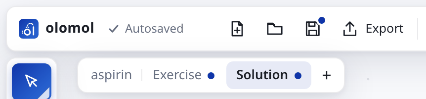
Each drawing opens in a tab of its own, with its own undo, file and view, so an exercise and its solution, or a scheme and the molecules for it, sit side by side. The tabs show under the top bar once there are two drawings; the drawing’s name is then on its tab.
- A click on a tab shows that drawing, a double click on the tab in front renames it, and a tab dragged along the others moves among them.
- The on a tab, or a middle click, closes the drawing; if it has changes that are not in a file, olomol asks first. + at the end of the tabs (or ) starts a new drawing.
- A right click on a tab offers Duplicate drawing (a copy in a new tab, say of an exercise for its solution), Rename and Close.
- In the installed app, Ctrl+Tab and Ctrl+Shift+Tab go to the next and the previous drawing (a browser keeps these keys for its own tabs).
All open drawings are autosaved and come back the next time you open olomol (section 1.5). The example An exercise and its solution: tabs and Show in Help shows it all on one exercise.
8.3 Show: drawings full screen
Show  , the last button of the top bar, puts the open drawings on the whole screen, without bars and panels, each fitted to the screen: the thing for a lecture or a seminar. →, ↓, Space or Page Down (what a presentation clicker sends) shows the next drawing, ←, ↑ or Page Up the one before, Home and End the first and the last. While the mouse moves, a small bar at the bottom shows the drawing’s number and name with back and next. Esc returns to drawing, every drawing as it was. Nothing can be changed meanwhile; the wheel still zooms.
, the last button of the top bar, puts the open drawings on the whole screen, without bars and panels, each fitted to the screen: the thing for a lecture or a seminar. →, ↓, Space or Page Down (what a presentation clicker sends) shows the next drawing, ←, ↑ or Page Up the one before, Home and End the first and the last. While the mouse moves, a small bar at the bottom shows the drawing’s number and name with back and next. Esc returns to drawing, every drawing as it was. Nothing can be changed meanwhile; the wheel still zooms.
Put each step in a tab of its own, an exercise first and its solution after it, and Show goes through them in order.
8.4 Exporting pictures and files
The Export menu in the top bar offers:
- SVG (vector, for Inkscape): a clean vector picture in which text stays text. It is the best choice for print, posters and further editing.
- PNG (4× resolution): a raster picture with a transparent background, or a white one if you tick White background. It says its own size, so Word and PowerPoint place it as large as the drawing’s style gives.
- Copy as picture (Ctrl+Shift+C): a PNG on the clipboard, and an SVG beside it for programs that take one; transparent or with White background.
- PDF / Print…: the drawing alone on a page, at the size of its style and smaller only if it doesn’t fit, landscape if it is wide. In the browser’s print window choose Save as PDF for a vector PDF, or a printer.
- Copy link: see section 8.6.
- Structure file: KET (for Ketcher), Molfile, SDF, SMILES, InChI and XYZ (3D coordinates). Beside a format, the menu says what of the drawing it can’t hold (without curved arrows, colours…).
With something selected, Only the selection is ticked and only the selection is exported. Untick it to export the whole drawing.
SVG and PNG pictures from olomol carry the drawing inside them, unseen, so Open or dropping the picture on the window brings back the drawing itself. A program that edits the picture may drop it, and a picture copied to the clipboard has none.
Structure files carry atoms, positions, charges, isotopes, radicals and wedges in standard formats. Reading them back has been tested in olomol, RDKit and Indigo, not in other programs. Lone pairs, curved arrows, brackets, partial bonds and colours are kept only in olomol’s own files, links and pictures. KET keeps the most of them for Ketcher: abbreviations as its groups, and Haworth and Fischer projections with their stereochemistry as wedges.
An XYZ file holds 3D coordinates with all hydrogens. It is a starting geometry for calculations (Gaussian, ORCA and the like), optimised by a force field only, not by quantum chemistry. A metal complex is built as in Turn in 3D, optimised as a whole by the universal force field (UFF) on its coordination polyhedron; UFF makes metal–ligand bonds somewhat shorter than they are (Zn–N in ZnTPP 1.95 Å instead of 2.04 Å). A complex Turn in 3D can’t build (ferrocene) isn’t written, and the program says why. The coordinates are worked out in the background: a panel shows that it is working while you keep drawing, and Save XYZ file saves them when they are ready, for the drawing as it was when you asked. The suggested file name is the molecule’s InChIKey, so several structures from one drawing don’t overwrite each other. Check the warning about stereocentres with no R/S drawn: the file then holds just one of the possible stereoisomers.
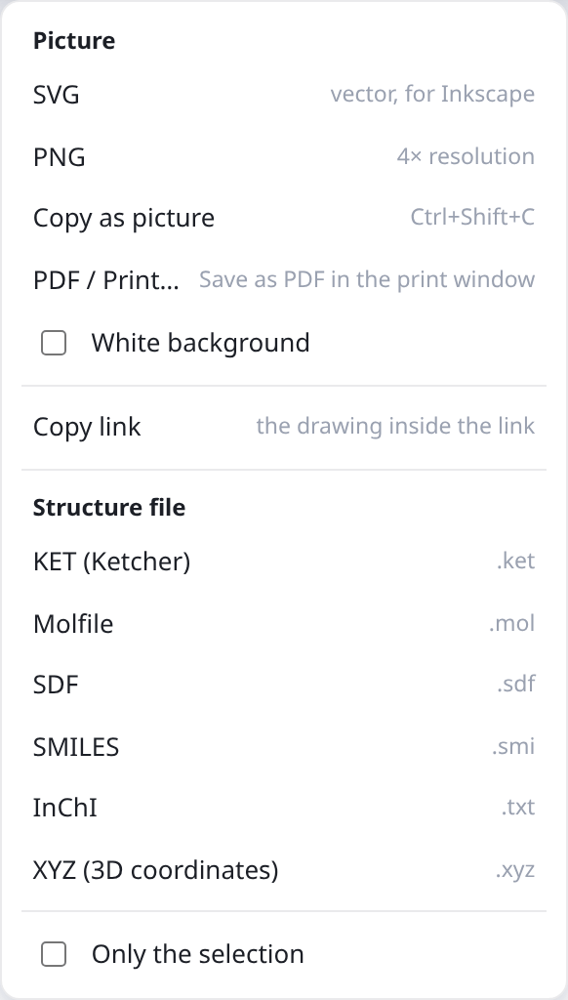
8.5 Into Word, PowerPoint and Google Docs
Select what you want to take over, or nothing for the whole drawing. Press Ctrl+Shift+C, or choose Export → Copy as picture, and then Ctrl+V in Word, PowerPoint or Google Docs.
SVG is the sharpest in print: Word and PowerPoint insert it (Insert → Pictures) and it does not blur when enlarged. For a journal, choose its style first (Settings → Style: ACS, RSC or your own, chapter 9), and pictures come out at the size it asks for.
8.6 Links
Export → Copy link makes a link that holds the whole drawing, after the # sign, which the browser does not send to the server. Whoever opens it sees your drawing, and their own comes back with Ctrl+Z. Some chat programs cut long links short; if that happens, send the .olom file.
A link with a structure. A link can also say which structure to draw, written by hand, in a worksheet or by a chatbot: olomol.org/#smiles=CCO draws ethanol, #name=caffeine looks the name up in PubChem, and #inchi=… and #cid=2244 work too. &title=… names the drawing, and several structures open each in a tab of its own, in order: #title=Exercise&smiles=C=CC.Br&title=Solution&smiles=CC(Br)C is an exercise with its solution behind it, ready for Show. A reaction SMILES (reactants>reagents>products) is drawn as a reaction. The installed app has no address bar: paste such a link into the search bar (section 3.5). Chatbots learn how to write these links from olomol.org/llms.txt.
9 Settings and keyboard shortcuts
9.1 The look of the drawing, language and window
The look changes most with how charges, lone pairs and atom colours are drawn. On the right is the same glycine in the default look, and with circled charges, lone pairs as bars (Lewis) and black atoms. The style, the charges and the lone pairs belong to the drawing and are kept in its file; the other settings apply to all drawings. All of them show in exported pictures.
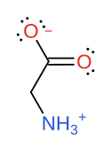

Settings ( at the top right):
at the top right):
Drawing
Style of this drawing: Screen, ACS (ChemDraw’s ACS Document 1996: bonds 14.4 pt, lines 0.6 pt, Arial 10 pt), RSC (12.2 pt, 0.5 pt, Arial 7 pt), Slides (thicker, for a projector) or Custom… (below). Pictures and PDFs come out at the style’s size.
- Charges: + −, or circled ⊕ ⊖.
- Lone pairs: Dots ··, or Bars (Lewis).
- Use for new drawings (shown when this drawing’s style differs): new drawings, and files that say no style, start in it.
- Atom colours: By element, or Black (your own colours stay).
- Carbons: CH3, Plain line, or All C for new drawings.
- Aromatic: Circle, or Dashed (the circle dashed).
- Coordination: → (an arrow from the donor), or Line (plain lines, as complexes are often drawn); with depth they are wedges either way.
- Links: hidden, or shown (the invisible links of One compound, on screen only).
- New arrows: the colour of new curved arrows.
Window
- Language: flag buttons EN, CS, DE. Without a choice the browser’s language is used, or English if the program does not have it. The page reloads, and the drawing with its zoom and position stays. Templates can be searched in English or Czech; PubChem knows English names only. The end of the address,
?lang=en,?lang=csor?lang=de, chooses the language too. - Theme: Auto (as the system), Light, or Dark.
- Animations: On or Off, short animations such as the ring flip. Until you choose, they follow the system: off when it asks for less motion.
- Debug: debug mode shows how the program decided (layout methods, label boxes, arrow candidates). It is meant for developers, but when you report a drawing problem, a screenshot with it on can help.
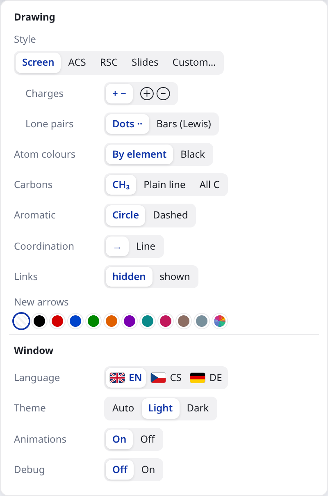
A style of your own. Custom… opens the Drawing style window for the sizes a journal or your group asks for, in points: Bond length, Lines, Bold bonds, wedges, Hash spacing, Margin round labels, Labels and texts and the Font, sans (Arial) or serif (Times). Start from fills in ACS 1996 or RSC to change from. A molecule beside them is drawn at true size as you type; Use gives the drawing that style. The example A journal’s look: ACS, RSC or a style of your own in Help shows one drawing in each.
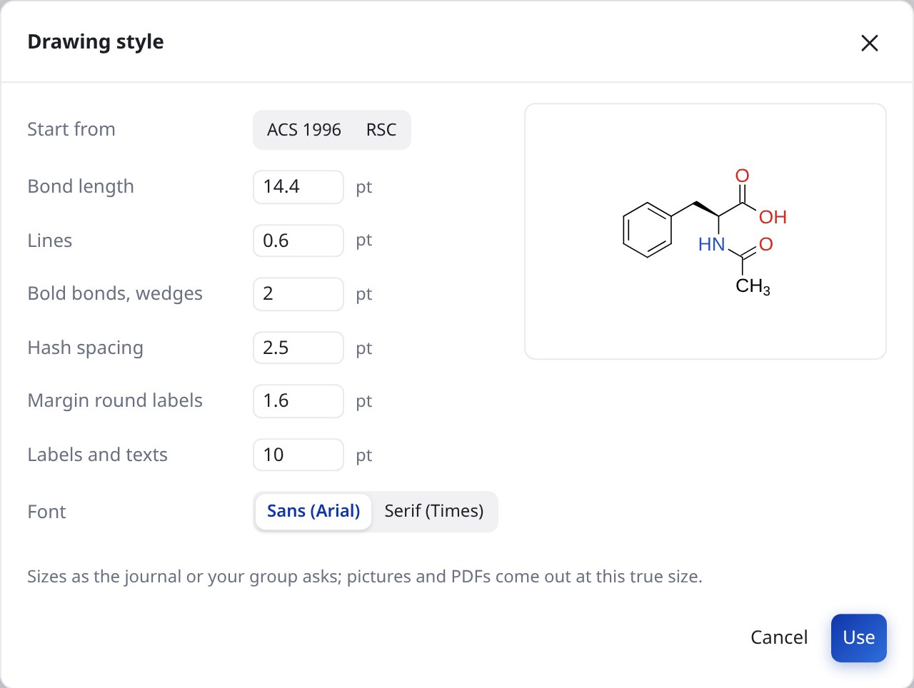
9.2 Keyboard shortcuts
The ? key or Keyboard shortcuts in Help (section 1.4) shows them too. Letters and digits do different things depending on what is under the pointer: an atom, a bond, or empty space.
Over an atom
| C N O S P F H I | changes the element |
| L B | Cl, Br |
| + − | charge |
| . | unpaired electron (again: two side by side, then none) |
| : | lone pairs on/off |
| Del | deletes it |
Over a bond
| 1 2 3 | single, double, triple |
| 1 again | wedge, hashed wedge, both from the other end, plain |
| Shift+1 | the same, backwards |
| D | dative bond, again hydrogen bond, again partial bond |
| Del | deletes the bond |
With a selection (pointer over it or over empty space)
| + − | the charge of every selected atom |
| 1 2 3 | every selected bond single, double, triple |
| : | the selected atoms’ lone pairs on/off |
In Turn in 3D
| Arrow keys | turn it (Shift: in the plane of the page) |
| S | stick model, and back |
| G | in the stick model: draw out groups |
| H | in the stick model: small hydrogens |
| Enter | Use this view |
| Esc | close the window |
Writing text
| Enter Esc | finish |
| Shift+Enter | new line |
| Ctrl+, Ctrl+. | subscript, superscript |
| Ctrl+B Ctrl+I | bold, italic |
Tools (pointer over empty space)
| V | select |
| E | eraser |
| N | draw with nitrogen (likewise O, S, P, F, H, I, L = Cl, B = Br; C: carbon again) |
| 1 | single bond (again: wedge, again: hashed wedge) |
| 2 | |
| 3 | |
| Z | |
| R | benzene (again: the next ring, 3- to 8-membered) |
| 5 | 5-membered ring |
| 6 | 6-membered ring |
| + | positive charge |
| − | negative charge |
| . | unpaired electron |
| : | |
| A | |
| Shift+A | fishhook (one electron) |
| Shift+T | Templates |
| X | reaction arrow |
| T | |
| K | brackets |
| D |
Anywhere
| Esc | cancel; again: the Select tool; again: nothing selected; again: box or lasso |
| Ctrl+Z Ctrl+Shift+Z Ctrl+Y | undo, redo |
| Ctrl+C Ctrl+X Ctrl+V | copy, cut, paste (SMILES and molfile too) |
| Ctrl+Shift+C | copy as picture (PNG), for Word, PowerPoint, Docs |
| Ctrl+A | select all |
| Ctrl+G Ctrl+Shift+G | group the selection, take a group apart (one level) |
| Ctrl+click | a group (again: the group round it); Ctrl+drag moves it, Ctrl+drag of a box takes whole groups |
| Del | delete the selection |
| Arrow keys | move the selection (Shift: further) |
| Ctrl+S Ctrl+O | save, open |
| Ctrl+Shift+S | save as another file |
| Ctrl+Tab Ctrl+Shift+Tab | the next drawing, the one before (in the installed app) |
| Ctrl+wheel | zoom |
| space+drag | move the canvas |
| / | the search bar: a name, SMILES, InChI or what you want to do |
| ? | this overview |
In Show
| → ↓ Space Page Down | the next drawing |
| ← ↑ Page Up | the one before |
| Home End | the first, the last |
| Esc | back to drawing |
10 Installing, limitations and reporting problems
10.1 Installing as an app and working offline
After the first visit olomol works without the internet too, because the browser keeps all its files. Offline, only the PubChem look-ups do not work.
Installed as an app, it has its own window and an icon on the desktop or in the Start menu, and it opens at once:
- Chrome and Edge: use the
 button at the top right (the first icon in the picture) or the install icon in the address bar.
button at the top right (the first icon in the picture) or the install icon in the address bar. - Firefox on Linux cannot install it as an app, but the program works normally in a browser window there, offline too.
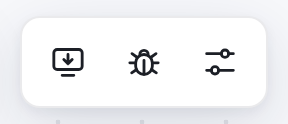
10.2 Known limitations
olomol is a testing version. This is what it cannot do yet, or can do only in part:
- Firefox on Linux cannot install the program as an app. Use Chrome or Edge, or work in a browser window.
- Drawings of metal complexes and molecules with an expanded octet made from a 3D model in Redraw are experimental: they sometimes look odd or are not offered at all. The XYZ export is only a starting geometry, optimised by a force field.
- A name from a structure is something the program cannot make. The other way round, a structure from a name goes through PubChem, so it needs the internet and English names.
- IUPAC numbering handles the parent chain and simple rings. Fused, bridged and spiro rings must be numbered by hand with the atom number tool .
- Lone pairs, curved arrows, brackets, special bonds and colours are carried only by olomol’s own files (.olom), links and pictures, and mostly by KET, not by molfile or SMILES.
- Chairs give stereochemistry only on their own, not fused or bridged; boats give none. Ring flip and Turn a chair refuse fused and bridged rings and rings with a double bond.
- Copying pictures to the clipboard is not allowed by some browsers. The program tells you so; export a PNG instead.
- The drawings in the browser live only in this browser on this computer and do not sync between computers. To carry them over, use .olom files or links.
- Saving back into a file (Ctrl+S without asking) works in Chrome and Edge. Firefox and Safari download the file instead (chapter 8).
10.3 Problems and ideas
Every message is welcome, even about a small thing. Click the bug at the top right (or Report a problem or an idea in Help). A window opens with a table of what helps to find a fault: the program’s version, the browser, the system, the window size and, if you leave With the drawing (a link that holds it whole, so I can see what you saw) ticked, a link to the drawing.
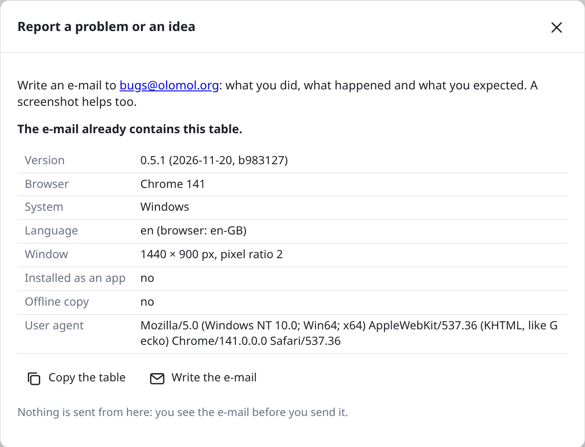
- Click Write the e-mail. A new e-mail to bugs@olomol.org opens with a few questions that are enough to answer: what you did (briefly is fine), what happened and what you expected. The table is already in it.
- A link to a drawing is too long for an e-mail, so with the drawing, click Copy the table and paste the table (Ctrl+V) at the end of the e-mail.
- A screenshot or the drawing’s .olom file helps too.
Nothing is sent from here: you see the e-mail and send it yourself. If no e-mail opens after the click (you use webmail only, say), write to the address by hand and paste the table all the same. The program’s version is also at the bottom left and in About.
A How olomol is built
This appendix is for those who want to know what is under the bonnet: computing teachers, school network administrators, developers and curious chemists. You do not need it to use the program.
A.1 The big picture
olomol is a static web page: HTML, JavaScript and WebAssembly, nothing more. It needs no application server, database or accounts. Any web space with https (a school server, GitHub Pages) is enough, and everything else runs in the user’s browser. Its own code is about 33,000 lines of JavaScript.
Screen · src/ui
bars, tabs, panel, menus, dialogs, the search bar, the Info card (React 19)Editor · src/editor
tools, selection, undo and redo, view, mouse and keysArranging · src/arrange
align, space evenly, grid, reaction schemeLayout · src/layout
layout methods, ring templates, checking, 3DDrawing · src/model
atoms, bonds, reaction and curved arrows, texts, brackets, fills: plain data, the copy for undo is structuredCloneChemistry · src/chem
hydrogens and lone pairs, formula and masses, R/S, IUPAC numbering, templatesRendering · src/render
the scene: labels, bonds, electrons, arrow rules; canvas and SVGFiles · src/io
.olom, KET, molfile, conversions, links, PubChemRDKit.js, megane-rdkit
SMILES, InChI, layout, CIP (R/S, E/Z), canonical SMILES; 3D structures (ETKDG, MMFF94s)Indigo (own thread)
RXN, CDXML, CDX, SDF, CML, Ketcher’s layoutOpenChemLib
3D structures where RDKit makes none, the MMFF94s+ force fieldBrowser
IndexedDB (drawings, earlier versions, recent files) · localStorage (settings) · service worker (offline) · clipboard
src/); the green row are WebAssembly libraries, downloaded only when first needed.A.2 What each part does
| Folder | What is in it |
|---|---|
src/model | The drawing as data. Coordinates are in bond lengths, the y axis points down as on screen. graph.js: molecules (connected parts), smallest rings. |
src/chem | Chemistry computed by its own code: hydrogens and lone pairs (valence.js), formula and masses, R/S labels, IUPAC numbering (numbering.js), templates, chairs and projections, delocalised groups (COO−, NO2). |
src/render | After every change the scene is computed once: where labels go, how bonds look, where lone pairs sit and which way curved arrows run. The canvas, the SVG export and finding what is under the pointer all use it. The pictures in this manual are exports of that same scene. |
src/editor | The editor and tools: selection, dragging, bonds, rings, templates, history (200 steps), keys. |
src/arrange, src/layout | Aligning and new layouts: several methods (RDKit, CoordGen, Indigo, RDKit’s ring system templates, 3D from RDKit or OpenChemLib, metal complexes by UFF), each drawing of a whole molecule turned onto the 30° grid. |
src/io | Files: olomol’s own .olom and KET (reading and writing), molfile V2000/V3000, conversions through RDKit and Indigo, XYZ, the drawing inside pictures, links, PubChem, printing. |
src/ui | The screen in React: bars, tabs, panel, menus, dialogs, the search bar, Show, the Info card. |
src/i18n | Languages. The key is the English text, cs.js and de.js are translation tables; a test reports missing texts. |
A.3 Rules that are not from the libraries
- Lone pairs are counted as valence electrons − charge − bonds − hydrogens − unpaired electrons. Tests check that the counts match RDKit’s.
- Curved arrows are not drawn by hand: for each arrow the program makes hundreds of candidate Bézier curves and gives each a “cost”. It pays for crossing a label, bond, lone pair, ring interior or another arrow, for a bend that does not suit the arrow’s length (short ones bend more, long ones less), for a lopsided arc and, for a new bond, for a head that does not come from the electrons’ side. The cheapest wins; Other way picks the next one that looks different. Debug mode (Settings → Debug) shows the candidates with their cost.
- A new layout never changes the molecule: each drawing is turned into a canonical SMILES with stereochemistry and compared with the original. Any that differs is dropped.
- IUPAC numbering follows the IUPAC 2013 recommendations (parent chain or ring, lowest locants, alphabetical order) and stores the reason with the numbers, which the panel shows.
- Flipping swaps wedges and hashed wedges, so the mirror image stays the same molecule; tests check that too.
A.4 Data and files
- Its own format is .olom, Olomol Layout Object Model: the drawing as olomol holds it, in JSON (UTF-8), so any program, script or language model can read and write it. Coordinates are in bond lengths, references between objects go by id, defaults are left out. The format makes promises: every olomol opens every earlier .olom; a new minor version (1.0 → 1.1) only adds; what a reader doesn’t know (a newer olomol’s field, another program’s
program:key) it keeps and writes back unchanged. The full description isdocs/olom.mdin the source code. - KET, the JSON of Ketcher, is written for Ketcher and Indigo (abbreviations as Ketcher’s groups, projections as wedges) and read, as were olomol’s own files before 0.5.0.
- Saving as you go: each open drawing, its earlier versions and the recent files are in the browser’s IndexedDB; the settings in
localStorage. - A link to a drawing: the .olom, compressed (
deflate-raw) and written in base64url after#d=. The browser does not send the part of an address after # to the server, so a drawing in a link never passes through the server olomol is on. - The drawing inside a picture: an SVG carries the .olom in a
<metadata>element, a PNG in a text chunk (olomol-ket), both in base64; nothing of it shows.
A.5 What leaves the computer
| When | What, and where to |
|---|---|
| Looking up a name or CID | only the typed text, to PubChem PUG REST (pubchem.ncbi.nlm.nih.gov) |
| PubChem page | the molecule’s InChIKey (or the typed SMILES or InChI), to PubChem; if PubChem has no exact match, its SMILES too |
| Loading the page | an ordinary request to the server olomol is on; libraries, fonts and icons are part of the page, nothing is fetched from elsewhere |
| Anything else | nothing: no analytics, no cookies, no accounts |
A.6 Offline and installing
The build (npm run build) makes a service worker (scripts/pwa.mjs) that stores all the page’s files in the browser’s cache on the first visit. The page itself (index.html) comes from the network when it can, so a new version shows at the next load; the other files have a fingerprint of their content in their names and can therefore come from the cache. A manifest and icons make the site an installable app (PWA).
A.7 Development and tests
The program is developed in Node.js 24 with Vite:
npm run dev | the development server at http://localhost:5173/ |
npm test | unit tests: chemistry against RDKit, reading and writing files, complete translations |
npm run check | the browser check (Chrome through Playwright): drawing, arrows, files, keys; in topics (scripts/check/), --only drawing runs one, --jobs 3 three at a time |
npm run build | builds the static site into dist/ |
node scripts/manual-shots.mjs | the pictures of this manual from the running program (--en: in English); typeset with Typst |
The examples in the manual are real drawings of the program, not redrawn pictures. The script builds them from SMILES and checks every molecule through RDKit before saving, stereochemistry included.
A.8 Licence and credits
olomol is free to use under the MIT License: it may be used, shared and changed, also in other programs, as long as the copyright and licence notice stays with it. The program uses RDKit (BSD-3-Clause, including the ring system templates © Schrödinger and its universal force field, UFF, ported to JavaScript), Indigo by EPAM Systems (Apache 2.0), megane-rdkit (BSD-3-Clause; RDKit’s 3D structures as WebAssembly), OpenChemLib (BSD-3-Clause) and React (MIT). KET is the format of Ketcher (EPAM Systems, Apache 2.0); no Ketcher code is in the program. Compound data on request come from PubChem (National Library of Medicine, USA). All licence texts open from the About olomol window (About under the version at the bottom left). The code was written with substantial help from Claude, a model by Anthropic.
How to cite
If olomol helped with a publication, a thesis or teaching materials, cite it with the version you used. The About olomol window has the citation: copy it as text, BibTeX, RIS or CSL JSON, or save it as a .bib, .ris or .json file for a reference manager (Zotero, Mendeley, EndNote, Citavi, LaTeX). It gives olomol’s DOI on Zenodo, which stands for all its versions, and the number of the version you use.